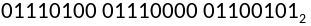
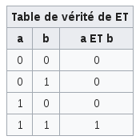

Introduction
Devant l’enthousiasme général croissant pour les crypto-monnaies dont l’usage se démocratise de plus en plus, s’accompagnant d’une médiatisation grandissante, nous avons décidé de nous intéresser sur ce phénomène qui a également su susciter notre intérêt et en particulier la technologie qui se cache derrière, la blockchain.
Avant nos recherches nous n’avions qu’une vision minimaliste des possibilités offertes par la technologie blockchain ; nous lui connaissions pour seule application les crypto-monnaies dont nous n’avions qu’une vision simpliste, celle souvent véhiculée par les médias : celle d’un moyen de paiement réservé aux “geeks” et aux criminels, car elle serait “anonyme”, “sécurisée”, et une bulle spéculative faisant la fortune de certains.
Nous connaissions une application de cette technologie qui déjà nous semblait prometteuse malgré des défauts mais une question s’offrait à nos esprits : les blockchains pourraient-elles révolutionner notre monde ?
Une révolution est un changement brusque qui peut être d’ordre économique, social, politique mais aussi technologique qui se produit dans une société. La technologie blockchain pourrait-elle être la source d’un changement de cet ordre ?
Nos recherches nous amèneront à nous intéresser aux dimensions techniques mais aussi économiques et sociales de ces nouvelles technologies. Nous analyserons d’abord le fonctionnement de la technologie blockchain avant d’observer l’étendue des possibilités qu’elle offre en nous intéressant aux crypto-monnaies qui sont les premières et les plus connues des applications de cette technologie, puis à d’autres moins connues et parfois encore non abouties.
La technologie Blockchain
Nous nous sommes d’abord posé une simple question : quelle technologie se cache derrière les crypto-monnaies qui sont aujourd’hui si populaires?
Nous allons tenter d’y répondre le plus précisément possible dans cette partie.
Introduction au concept de blockchain
Pour introduire le concept de blockchain, nous avons décidé de nous servir d’une analogie à travers une courte histoire.
Lea, Margaux, Thomas et Vincent, un groupe d'amis, sont en vacances à la mer ; ils doivent effectuer une corvée à tour de rôle. Cette tâche est source de tensions et de discordes au sein du groupe.
Entre celle qui a oublié son tour, celui qui prétend avoir effectué sa corvée plus souvent, celle qui dit avoir plus travaillé la semaine passée, la confiance se fragilise.
Pour mettre un terme à ces discordes, Vincent cherche une solution.
«Il faudrait qu’un tiers tienne le compte des tâches effectuées par chacun pour trancher en cas de dispute» mais cette hypothèse le révulse. Il ne peut se résigner à offrir à un tiers le pouvoir de décider qui a fait ses tâches et qui doit les faire.
«Il nous faut un moyen de tenir le compte des tâches effectuées par chacun sans devoir faire confiance à un tiers!» dit Vincent pris d'un éclair de génie.
Il attribue à chacun de ses amis et à lui même une couleur de palet différente.
Puis il prend un long tube de plastique transparent indestructible possédant une ouverture à une seule extrémité qu’il fixe sur le sol pour accueillir les palets à chaque tour de corvée.
Pour prévenir toute triche, l’accès au tube n’est possible qu’avec la présence d’au moins la majorité des amis. Cette restriction est permise par la présence d’un couvercle muni de quatre cadenas à la serrure différente, chacun possédant une clef ouvrant l’un des cadenas.
Vincent rappelle alors les 3 règles suivantes:
"Vous devez faire chacun votre tour de corvée"
"Une fois votre corvée terminée vous devez placer votre palet au sommet du tube"
"Les autres amis doivent ensuite valider que la corvée a été effectuée en ouvrant ensemble le couvercle grâce à leurs clefs respectives pour permettre au palet de tomber dans le tube. La majorité des clefs suffit à faire tomber le palet."
Ainsi, le système imaginé par Vincent permet à chacun des 4 amis de vérifier la bonne réalisation de la corvée et savoir à qui est le prochain tour en regardant simplement le tube. Son tube est indestructible et infalsifiable du fait que l’ajout d’un palet nécessite l’approbation de la majorité et qu’il est impossible de récupérer un palet déjà tombé à l’intérieur de celui ci.
Le tube imaginé par Vincent représente toujours la vérité, le consensus, c’est le "tube de la vérité".
Le système de Vincent comporte cependant une faille : si 2 ou 3 des amis sont de mauvaise foi, le palet ne sera jamais validé, et d’autres pourraient l’être sans que la tâche ne soit bien effectuée.
Vincent ne le sait pas, mais son "tube de la vérité" s’apparente à une blockchain physique.
Le seul moyen de réduire ce risque est d’augmenter le nombre d’amis utilisant le tube.
Ainsi, si 100 000 amis utilisent ce tube, il faudrait en corrompre la moitié, c’est à dire 50 000 pour bloquer la vérité, ce qui devient une tâche très compliquée.
Seulement l’utilisation du tube par 100 000 personnes pose un autre problème, sa consultation et l’ajout de palet seraient physiquement problématiques, les gens se bousculeraient et ne pourraient finalement pas accéder au tube qui occuperait un espace immense avec ses 100 000 serrures et ses innombrables palets entassés.
Le numérique et internet permettent de contourner cette difficulté en dématérialisant le tube, donnant ainsi l’accès à des milliers de personnes en même temps, instantanément et n’importe où dans le monde grâce au réseau internet sans se gêner les uns les autres.
Une nouvelle technologie
Un aperçu de la technologie
Qu’est-ce que la blockchain?
La blockchain est une technologie de stockage et de transmission d’informations, transparente, sécurisée, et fonctionnant sans organe central de contrôle. (définition de Blockchain France)
La blockchain est une base de données qui contient l’historique de toutes les données qui lui ont été ajoutées par ses utilisateurs depuis sa création. Cette base de données est immuable et décentralisée, ce qui permet sa sécurité.
Elle peut être publique, offrant à tous le droit de lire les informations, ou privée, n’étant accessible qu’à un ensemble de personnes définie.
Dans le cas d’une blockchain publique, on peut comme l’écrit le mathématicien Jean-Paul Delahaye, la comparer à "un très grand cahier, que tout le monde peut lire librement, gratuitement, sur lequel tout le monde peut écrire, qui est impossible à effacer et indestructible."
La blockchain s’apparente à un collier de perles qu’on serait en train de créer en utilisant des perles indestructibles gravées de l’information à conserver. La création de ce collier suivrait une règle: une fois une perle enfilée, on ne peut en aucun cas l'ôter du collier.
Les principales utilisations de cette technologie se retrouvent aujourd’hui dans les crypto-monnaies, un nouveau type de monnaie basé sur la cryptographie, sur lequel nous nous attarderons plus tard, mais aussi dans des applications encore peu répandues et pourtant prometteuses qui attireront elles aussi notre attention.
Son histoire
La blockchain ou chaîne de blocs dans la langue de Molière est une technologie qui est apparue en 2008 avec la fameuse crypto-monnaie Bitcoin qui repose sur celle-ci, mais s’est faite surtout connaître l’année suivante, en 2009, avec le lancement le 3 janvier du Bitcoin et sa popularisation. Son créateur est aujourd'hui encore inconnu, seul son pseudo est connu: Satoshi Nakamoto. Pseudonyme, il pourrait s’agir d’un groupe de personnes. Nombreux sont ceux qui prétendent être le fameux créateur.
Fonctionnement de la technologie blockchain
Nous allons maintenant aborder l’aspect technique de la technologie blockchain et tenter d’en expliquer le fonctionnement et les principes sur lesquels elle repose.
Notations utilisées
Il nous semble essentiel avant de débuter notre explication de préciser les quelques notations utilisées pour permettre une pleine compréhension sans ambiguïté et ne plus avoir besoin de les repréciser.
Un ensemble de caractères compris entre guillemets est une chaîne de caractère. Par exemple "test" Les valeurs numériques attribuées aux chaînes de caractères le sont en utilisant la norme pour le codage de caractère ASCII.
où x est une valeur numérique écrite sous forme de chiffres signifie que x est une nombre en base y.
L’opérateur de concaténation est représenté par le symbole ||
Les notations utilisées dans les annexes sont précisées dans ces dernières.
Fonctionnement général
La plupart des blockchains publiques fonctionnent avec une monnaie ou un token (jeton) programmable. Le Bitcoin est un exemple de monnaie. Ces tokens servent à encourager des personnes à servir de nœud au réseau et à contribuer à sa sécurisation en les rétribuant.
Les informations ou données que les utilisateurs souhaitent ajouter à la blockchain, les transactions effectuées entre les utilisateurs du réseau dans le cas d’une crypto-monnaie, sont mises en ligne sur le réseau par les utilisateurs et regroupées en blocs par les nœuds du réseau qui se chargent de les valider.
La création de blocs est limitée, ainsi le nœud qui obtient le droit de générer le prochain bloc par des mécanismes que nous expliciterons ultérieurement dans un prochain temps transmet son nouveau bloc aux autres nœuds du réseau qui vérifient sa validité avant de l’ajout à la blockchain qu’ils hébergent. L’information est alors vue comme valide par tous.
Pour récompenser le nœud, qui a créé et diffusé le nouveau bloc et a ainsi participé à la sécurité du réseau, un nombre prédéfini de tokens lui est octroyé.
L’intervalle de temps entre l’ajout de deux blocs est variable selon la blockchain, ainsi il s’écoule environ 15 minutes entre deux blocs pour la blockchain Bitcoin contre seulement 15 secondes pour la blockchain Ethereum. Bitcoin et Ethereum sont à ce jour les deux blockchains les plus répandues.
Pour expliquer le fonctionnement technique d’une blockchain, il nous semble essentiel de nous intéresser dans un premier temps aux fonctions de hachage cryptographique, sur lesquelles se fonde la technologie blockchain.
Fonctions de hachage
Qu’est ce qu’une fonction de hachage?
Principe général:
Une fonction de hachage est une fonction qui, à un message de taille arbitraire fournie en entrée, associe une image appelée empreinte ou résumé ou haché noté H de taille fixe y.
M peut avoir n’importe quelle taille: x
H est d’une taille fixée à l’avance: y
Il n’y a pas de lien entre x et y, c’est à dire que la taille de l’empreinte est indépendante de celle du message.
Le calcul de l’empreinte d’un message ( H=h(M) ) doit être simple tandis que l’inverse doit être très complexe.
Définition:
"On nomme fonction de hachage une fonction particulière qui, à partir d’une donnée fournie en entrée, calcule une empreinte servant à identifier rapidement bien qu’incomplètement, la donnée initiale."
(Wikipédia, page dédiée aux fonctions de hachage)
Le résultat d’une fonction de hachage peut prendre différents noms: empreinte comme vu précédemment mais aussi haché, condensé, condensat ou somme de contrôle.
Propriétés:
Une fonction de hachage simple est une fonction:
Unidirectionnelle : On peut facilement calculer une empreinte mais il doit être très difficile de trouver le message initial à partir d’une empreinte.
Déterministe : Une entrée produit toujours la même sortie.
Uniforme : Les sorties possibles sont distribuées de façon uniforme pour chaque entrée.
Continue (en dehors d’une application cryptographique) : Pour deux messages proches, on doit obtenir deux empreintes proches.
Un exemple simple de fonction de hachage:
Soit f la fonction qui à un message m associe une empreinte s.
Soit a la somme de tous les octets composant le message m, et p le produit de ces mêmes octets. a et p sont de simples octets, c’est à dire que a et psont des valeurs modulo .
s sera obtenu par concaténation (notée || ) de a et p, f(m) = a || p
C’est à dire que a et p sont mis bout à bout.
Message : "tpe"
Pour m = "tpe" =  (en utilisant la norme ASCII pour le codage de caractères)
(la taille de a est limitée à 1 octet soit 8 bits)
(la taille de p est elle aussi limitée à 1 octet)
D’où 
En ne modifiant qu’un seul caractère du message, on observe une modification de son empreinte.
Message : "Tpe"
Cet exemple simpliste permet d’illustrer le principe d’une fonction de hachage mais ne représente qu’une piètre fonction de hachage pour une utilisation cryptographique. En effet, le nombre de collisions avec cette fonction est très important : les chaînes de caractères composées des mêmes caractères avec les mêmes nombres d'occurrences possèdent la même image par cette fonction, par exemple, f("tpe") = f(“tep”).
Les fonctions de hachage qui nous intéressent sont les fonctions de hachage cryptographiques ou cryptographiquement sûres.
Celles-ci possèdent des caractéristiques supplémentaires, ce sont des fonctions:
- Non continues : Pour un changement minime du message initial, on doit observer une modification importante de l’empreinte obtenue. Ainsi il est impossible de modifier un message sans changer son empreinte par la fonction de hachage.
Un exemple ; avec la fonction SHA-256 que nous détaillerons plus tard :
"Un message" -> BB7A8142B8290313F2D621D849284A58313A501BC3BA223C21A04D34F84071A4
En remplaçant le “U” par un “u” dans le message, on a :
“un message” -> F024CDC9D8AAD34D1724FD997DE4A14DDC979F06F6B31D1963A4E46F0DC2EDE1
Or, on a en base 2 (notifié par ) en utilisant la norme ASCII pour le codage de caractères :
On observe une grande différence de l’empreinte obtenue pour un changement minime du message.
- Résistantes à la première préimage : Connaissant une empreinte H il est impossible de retrouver le message M d’origine, c’est à dire l’antécédent de l’empreinte H par la fonction de hachage h.
- Résistantes à la seconde préimage : Connaissant un message M et son empreinte H, il est impossible de trouver un autre message M’ tel que M et M’ possèdent la même empreinte, c’est à dire que l’égalité h(M) = h(M’) = H est impossible.
- Résistantes aux collisions : Il est très difficile de trouver deux messages M et M’ ayant la même empreinte.
La sécurité d’une fonction de hachage dépend en grande partie de la taille de l’empreinte générée (la taille de l’image du message par la fonction de hachage).
En effet celle-ci limite le nombre d’empreintes possibles. Par exemple, une fonction produisant une empreinte de 64 bits n’offre que empreintes possibles. Les collisions sont donc inévitables du fait du nombre limité d’empreintes possibles. De ce fait, il est possible de trouver des collisions en procédant à des "attaques".
Attaque des anniversaires
L’attaque des anniversaires consiste à essayer toutes les entrées possibles jusqu’à trouver une collision, on parle aussi d’attaque par force brute. Cette attaque permet donc de faire passer une donnée pour une autre dans des systèmes qui vérifient uniquement le hash de la donnée pour la vérifier.
Cette attaque des anniversaires tient son nom du paradoxe des anniversaires.
Ce "paradoxe" résulte de l’estimation probabiliste du nombre de personnes minimum que l’on doit réunir pour s’assurer que la probabilité de trouver parmis ces individus 2 personnes nées le même jour soit égal à au moins . Il ne s’agit pas d’un paradoxe dans le sens logique du terme, il n’y a pas de contradiction logique, mais dans le sens où le résultat de cette estimation contredit l’intuition qui tend à surestimer le nombre d’individus à réunir pour obtenir une telle probabilité.
Démonstration :
On va calculer la probabilité p(A) pour que, dans un groupe de n personnes, ces personnes aient toutes un jour d’anniversaire différent.
- Quand on est en présence de 2 individus on a :
Pour que le deuxième individu ne soit pas né le même jour que le premier, il y a 364 dates possibles dans l’année, c’est à dire la totalité des dates possibles soit 365 auxquelles on soustrait celle de la naissance du premier individu.
Quand on est en présence de 3 individus on a : Quand on est 3 individus, le troisième doit avoir son anniversaire un jour différents des 2 autres, c’est à dire un des 363 jours restants.
En présence de n individus on a :
Pour n individus, on réitère le même raisonnement : on décrémente de 1 le nombre de dates possibles.
On a donc la probabilité p’(A) que le groupe compte au moins deux individus nés le même jour : p’(A) = 1 - p(A)
En réalisant l’application numérique, on obtient qu’à partir de 23 individus réunis, la probabilité p’(A) que le groupe compte au moins 2 personnes nées le même jour dépasse .
Comme nous l’avons dit, l’attaque des anniversaires tire son nom de ce "paradoxe des anniversaires". En effet, comme pour les dates d’anniversaires, il y a un nombre maximal d’empreintes possibles, par exemple, une fonction produisant une empreinte de 64 bits n’offre “que”  empreintes possibles. Ainsi on peut de la même manière exprimer la probabilité p(H) que toutes les empreintes d’une population de n empreintes choisis aléatoirement soient différentes en fonction de la taille b en bits de l’empreinte.
empreintes possibles. Ainsi on peut de la même manière exprimer la probabilité p(H) que toutes les empreintes d’une population de n empreintes choisis aléatoirement soient différentes en fonction de la taille b en bits de l’empreinte.
On a donc la probabilité p’(H) que la population d’empreintes étudiées compte au moins deux empreintes identiques : p’(H) = 1 - p(H)
Ainsi il est possible d’estimer le nombre moyen d’essais à effectuer pour trouver une collision en utilisant l’attaque des anniversaires. Par exemple, on peut dresser un tableau donnant le nombre de messages à essayer en moyenne pour avoir une probabilité p(H) égale à au moins  .
.
Ces valeurs illustrent ce qui était intuitif : plus la taille de l’empreinte est importante, plus il est dur de trouver une collision par l’attaque des anniversaires. Avec l’évolution constante de la puissance de calcule des ordinateurs, la taille des empreintes utilisées augmente pour maintenir un niveau de sécurité élevé. Aujourd’hui, les fonctions de hachage les plus répandues utilisent des empreintes d’une taille souvent supérieur à 256 bits. Par exemple la fonction de hachage SHA-256, que nous expliciterons plus tard, produit des empreinte de 256 bits bien que des versions de cette même fonction offrant des empreintes plus ou moins longues existent.
Pour être sûre, une fonction de hachage ne doit pas permettre de trouver une collision plus aisément qu’avec l’attaque des anniversaires et le condensé calculé par la fonction de hachage doit être assez grand pour rendre l’attaque des anniversaires assez coûteuse en ressources et en temps pour être impraticable. Dans le cas contraire, on dit que la fonction de hachage est cassée. Ainsi les fonctions de hachage cryptographique ont une durée de vie limitée due à l'augmentation de la puissance de calcul des ordinateurs.
Fonctionnement technique
Beaucoup de fonctions de hachage fonctionnent de la même manière et utilisent la construction de Merkle-Damgård, du nom de ses inventeurs les cryptologues contemporains Ralph Merkle et Ivan Damgård, qui est schématisée sur la page suivante.
On découpe le message initial en blocs sur lesquels on opère séquentiellement avec une fonction de compression (f) qui se trouve au cœur de la fonction de hachage. Cette fonction de compression modifie un tampon de taille n contenant des valeurs de hachage intermédiaires. Certaines fonctions de hachage peuvent se voir utilisées avec un vecteur d’initialisation (IV), c’est à dire un ensemble de valeurs qui sont utilisées pour initialiser la fonction de hachage en fournissant un premier état du tampon contenant l’état de la fonction de hachage. Il est à noter qu’un vecteur d’initialisation peut être utilisé comme une clé pour des systèmes d’authentification. Cependant toutes les fonctions de hachage ne proposent pas l’utilisation de vecteur d’initialisation, il n’est pas toujours possible de modifier l’état initial de la fonction de hachage.
f: la fonction de compression
b: taille de bloc pour l’entrée de la fonction de compression
n: taille de l’état de la fonction de hachage
Bourrage: donnée qui peut être ajoutée à la fin du message, par exemple pour compléter le message et lui faire atteindre une taille lui permettant d’être découpé en blocs égaux (voir l’annexe 1 concernant la fonction SHA-256 pour plus de précisions)
Remarques:
Le bourrage n’est pas toujours présent
Le vecteur d’initialisation IV n’est pas toujours présent
f et f’, les fonctions de compression, peuvent être la même fonction mais ce n’est pas toujours le cas
Cette construction est actuellement utilisée par les fonctions de hachage les plus répandues dont SHA-256 à laquelle nous nous sommes intéressés et dont nous avons expliqué le fonctionnement. Son explication étant plutôt volumineuse et facultative, elle est disponible en annexe (annexe 1). Cette dernière contient l'explication de la fonction de hachage SHA-256 mais aussi celle de tous les opérateurs binaires utilisés par cette fonction.
Nous pouvons maintenant revenir à la blockchain en elle-même, plus précisément à sa structure.
Structure de la blockchain
Fig.1 Structure d’une blockchain
Comme son nom l’indique, la technologie blockchain ou chaîne de blocs s’appuie sur un ensemble de blocs liés entre eux.
La figure 1 représente la structure minimale d’une blockchain et de ses composants les blocs. Chaque bloc possède deux parties, une en-tête et une seconde contenant les données.
L’en-tête de chaque bloc contient le hash du bloc qui est obtenu en calculant l’image de la somme du hash du contenu du bloc et le hash du bloc précédent (voir la figure 2). De ce fait, le hash de chaque bloc dépend de celui du bloc qui le précède.
Or on ne peut pas modifier la donnée d’entrée d’une fonction de hachage sans modifier son empreinte et il est impossible pour une valeur de hachage donnée, de construire un message ayant cette valeur de hachage, d’où un bloc ne peut être modifié sans invalider les blocs suivants. Cette propriété permet de garantir l’authenticité de toutes les informations de la chaîne.
Fig.2 Arbre de hachage
Où :
Hash correspond à l’empreinte de l’objet x contenu dans le bloc y par la fonction de hachage.
hash(x) correspond à une fonction de hachage
Lorsqu’une fonction hash(x) est précisée, il s’agit de la valeur attribuée au hash indiqué sur la ligne supérieure
Une base de données décentralisée
La blockchain est une base de données décentralisée, c’est à dire qu’au lieu d’être centralisée sur un seul serveur qui traite les demandes de tous les utilisateurs comme sur la figure 3, la fonction de stockage et de diffusion des données est déléguée aux utilisateurs qui représentent chacun un nœud (ou node) du réseau comme sur la figure 4.
La décentralisation de la blockchain lui confèrent plusieurs avantages :
aucun intermédiaire n’est présent : Les utilisateurs accèdent directement à l’information qu’ils hébergent eux même et partagent avec les autres membres du réseau.
la blockchain est incensurable : La redondance et la dispersion des moyens de stockage et de diffusion rendent presque impossible la censure du fait d’une impossibilité matérielle d’accéder à tous les supports de stockage pour procéder à celle-ci.
la blockchain est constamment consultable : En effet, l’importante redondance et la dispersion des moyens de stockage et de diffusion réduisent très fortement les probabilités que tous les noeuds du réseau, les machines partageant l’information, soient inaccessibles au même instant. Ce qui offre une tolérance à la panne.
Fig. 3 : Réseau centralisé
Fig. 4 : Réseau décentralisé
Gouvernance décentralisée et problème des généraux byzantins : le système de consensus
Dans un système centralisé classique, le mode de gouvernance est lui aussi centralisé. Tous les acteurs du système se soumettent à une autorité connue de tous, qui joue le rôle de tiers de confiance et se charge de fixer les règles, de les faire appliquer, et de jouer le rôle d’arbitre en cas de conflits.
À l’inverse dans un modèle décentralisé et sans intermédiaire comme celui de la blockchain, le mode de gouvernance est tout autant décentralisé. Il se présente alors le problème de la présence d’acteurs, ici des nœuds du réseau, malhonnêtes ou défaillants.
Cette situation se rapproche de celle du problème des généraux byzantins : “Des généraux de l'armée byzantine campent autour d'une cité ennemie. Ils ne peuvent communiquer qu'à l'aide de messagers et doivent établir un plan de bataille commun, faute de quoi la défaite sera inévitable. Cependant un certain nombre de ces généraux peuvent s'avérer être des traîtres, qui essayeront donc de semer la confusion parmi les autres. Le problème est donc de trouver un algorithme pour s'assurer que les généraux loyaux arrivent tout de même à se mettre d'accord sur un plan de bataille.” d’après Wikipédia.
Le problème consiste à permettre à la majorité de généraux loyaux, dans notre cas de nœuds honnêtes et non défaillants, de convenir d’un plan commun, ici de se mettre d’accord sur une vérité, malgré la présence éventuelle de traîtres parmi eux.
La technologie blockchain propose une solution au problème des généraux byzantins. Pour ce faire, il lui est nécessaire d’établir un consensus entre les membres du réseau.
Qu’est ce qu’un consensus?
« Un consensus caractérise l’existence parmi les membres d’un groupe d’un accord général (tacite ou manifeste), positif et unanime pouvant permettre de prendre une décision ou d’agir ensemble sans vote préalable ou délibération particulière. » (définition de Wikipédia).
Le consensus s’obtient par le respect par tous les membres du réseau des mêmes règles pour la création et l’ajout de nouveaux blocs. Ainsi, si un utilisateur décide de suivre d’autres règles, comme il n’existe aucun organe central pour valider et diffuser ces nouvelles règles, cela ne peut se faire qu’avec l’accord du plus grand nombre des utilisateurs. Ainsi la gouvernance de la blockchain ne s’appuie pas sur une unique entité qui définirait les règles et leurs modifications mais est distribuée à tous les utilisateurs.
Il peut arriver sur le réseau que plusieurs blocs soient diffusés pour être ajoutés à la suite du bloc précédent. Dans ce cas, chaque nœud conserve les différentes versions ou instances de la chaîne en attendant qu’un bloc soit ajouté sur l’une des instances. Chaque nœud du réseau ne conserve ensuite que la chaîne de bloc la plus longue. En effet l’instance (version de la blockchain) la plus longue de la chaîne représente celle dans laquelle la communauté s’est le plus investie, et donc celle de la majorité qui fait consensus.
Il est impossible pour un individu malhonnête de proposer une instance alternative sans être mis en minorité vis à vis de ses pairs. En effet l’arbre de hachage de cette instance sera toujours différent de celui de l’instance majoritaire, l'empêchant d'ajouter les blocs venus du groupe majoritaire. De même, ses propres blocs ne seront pas ajoutés à la plus longue des blockchains.
Pour permettre le consensus, il est nécessaire de limiter la création de blocs. En effet, si la création de blocs est trop aisée, la sécurité et l’utilité de la blockchain est compromise:
Le grand nombre de blocs créés rend presque impossible le consensus:
- Il est possible de modifier un bloc passé et de recalculer tous les hashs des blocs suivants qu’implique cette modification. Ainsi il est possible de créer une instance de la blockchain qui soit plus longue et donc de la faire passer pour la chaîne légitime.
- Il est possible de créer à partir d’un ancien bloc une instance de la blockchain qui sera plus longue et donc légitime en ignorant le contenu des blocs suivants le bloc utilisé.
Il est possible de mener contre la blockchain une attaque par déni de service en envoyant un grand nombre de nouveaux blocs sur le réseau de manière à rendre très difficile l'accès au service pour ses utilisateurs.
Pour limiter la création de blocs, il existe plusieurs solutions techniques dont la preuve de travail et la preuve d’enjeux qui sont les plus répandues.
La preuve de travail ou Proof-of-Work consiste en la réalisation d’un travail complexe pour obtenir le droit d’ajouter un bloc. Le travail demandé est asymétrique : il est difficile mais possible à effectuer, mais facile à vérifier.
Ce système de validation de blocs est le plus répandu à l’heure actuelle, étant notamment utilisé par les crypto-monnaies Bitcoin et Ethereum qui sont les deux plus populaires. Par exemple, le Bitcoin utilise un algorithme de preuve de travail inspiré du système Hashcash. Pour valider un bloc, le mineur, c’est à dire le nœud du réseau désireux d’ajouter un nouveau bloc, doit ajouter dans le bloc un nonce, il s’agit d’un nombre aléatoire qui ne sera utilisé qu’une seule fois, et calculer le hash du bloc. Le mineur répète l’opération jusqu’à obtenir un hash commençant par le nombre de zéros demandé, c’est dire inférieur à une valeur donnée. Actuellement le hash doit être inférieur à pour que le bloc puisse être ajouté sur la blockchain Bitcoin.
Cependant cette catégorie d’algorithme de validation de blocs implique une forte consommation énergétique du fait des nombreux calculs nécessaires à l’ajout d’un bloc.
La preuve d’enjeu ou Proof-of-Stake ne peut être implémenter que sur une blockchain possédant un système de jeton ou token. Ce système de validation choisit effectivement l’utilisateur qui aura le droit de miner le prochain bloc en fonction du nombre de tokens possédés par chaque utilisateur. Ainsi, un utilisateur possédant 20% des jetons peut théoriquement miner 20% des blocs. Si l’utilisateur sélectionné ne valide pas de bloc, un autre est choisi pour le remplacer.
Les algorithmes de validation de bloc par preuve d’enjeu reposent sur le fait que plus un utilisateur possède de jetons, plus la pérennité du système est dans ses intérêts, plus l’enjeu de la pérennité du système est importante pour lui d’où le nom de cette catégorie d’algorithmes. Ce système de validation de bloc est encore peu répandue mais des acteurs d’importance s’y intéressent, par exemple, la fondation Ethereum travaille actuellement sur un algorithme de validation de bloc par preuve d’enjeu nommé Casper qui remplacera bientôt la preuve de travail sur la crypto-monnaie éponyme, actuellement la deuxième crypto-monnaie la plus répandue.
Ces algorithmes de validation de bloc ont l’avantage d’être beaucoup moins énergivores que leurs homologues précédemment évoqués.
Un exemple simple d’implémentation de cette technologie
Pour mieux appréhender le fonctionnement d’une blockchain, nous avons décidé d’en créer une nous même. Nous avons fait le choix de ne reproduire que la liaison existante entre deux blocs, et ce pour plusieurs raison. D’abord cette partie nous semble primordiale à la compréhension de la technologie mais surtout car nous ne disposions pas des infrastructures pour mettre en œuvre une blockchain à une échelle suffisamment grande pour que la représentation d’un système de consensus soit pertinent.
Pour ce faire nous utiliserons le langage de programmation Python, dans sa version 2.7, qui offre une grande lisibilité.
Nous utiliserons la fonction de hachage cryptographique SHA-256 étudiée dans l’annexe 1 dont nous utiliserons l’implémentation Python offerte par la librairie hashlib.
Pour plus de simplicité, on crée une fonction qui prend en paramètre une chaîne de caractère, lui applique la fonction SHA-256 de la librairie hashlib et retourne son résultat, soit le hash de la chaîne de caractère en entrée.
Dans la création de notre blockchain, nous allons commencer par définir ce à quoi nos blocs vont ressembler, sur quel modèle ils seront créés.
Pour ce faire, nous définissons une classe d’objets pour nos futurs blocs.
Chaque bloc a pour attribut ses données, le hash du bloc précédent et son propre hash.
Son hash sera obtenu en calculant l'empreinte par une fonction de hachage de la concaténation des données que sont le contenu du bloc et le hash du bloc précédent.
Nous définissons une méthode de classe permettant de calculer le hash du bloc à sa création.
Classe d’un bloc
On définit une classe d’objet pour nos futures chaînes de bloc, "blockchain".
Chaque blockchain a pour attribut une liste contenant les blocs.
Elle se caractérise par trois méthodes:
- Une méthode permettant de vérifier la validité d’un bloc:
cette méthode prend en arguments le bloc à vérifier et la place du bloc dans la liste (le numéro de sa place).
Pour vérifier la validité du bloc, la méthode vérifie si le hash du bloc correspond au hash de la chaîne de caractère composée des données du bloc et du hash du bloc le précédant dans la liste. Nous l’appellerons check_block_validity.
- Une méthode permettant d’ajouter un bloc à la chaîne:
cette méthode prend en argument le bloc à ajouter
Ce bloc n’est ajouté à la chaîne que si la méthode permettant de vérifier la validité d’un bloc renvoie VRAI avec ce bloc et la longueur de la chaîne(la position du dernier bloc de la chaîne) en arguments. Nous l’appellerons add_block.
- Une méthode permettant de vérifier l’intégrité de la chaîne, c’est à dire de vérifier la validité de chaque bloc.
Cette méthode fait passer chaque bloc de la chaîne excepté le bloc en position 0, (en effet ce dernier est toujours valide, il ne dépend d’aucun bloc, étant le premier) et note les positions des bloc non valides qu’elle retourne sous forme de liste. Nous l’appellerons check_chain_integrity.
Classe de la blockchain
On définit une fonction permettant de créer le premier bloc d’une chaîne.
Elle prend en argument la donnée à inclure dans le nouveau bloc et retourne un nouveau bloc contenant cette donné et "0" pour valeur du hash du précédent bloc. Cette valeur est arbitraire et n’a pas d’importance.
Création du premier bloc d’une chaîne
On définit une fonction permettant de créer une nouvelle blockchain à partir d’un bloc.
La fonction prends un bloc (objet de classe bloc) en paramètre.
Création d’une nouvelle blockchain
On définit une fonction permettant de créer un nouveau bloc valide pour être ajouté à la blockchain.
Création du bloc suivant dans la chaîne
Nous allons maintenant tenter de vérifier empiriquement qu’il n’est pas possible de modifier un bloc de la chaîne.
Pour commencer nous importons notre code précédemment écrit dans un fichier nommé "blockchain.py". Ceci étant fait, nous pouvons créer notre premier bloc qui contiendra la chaîne de caractères “Un nouveau bloc ! ”, et notre blockchain utilisant le bloc précédemment créé comme premier bloc.
Nous disposons maintenant d’une blockchain… qui ne contient qu’un unique bloc, ce qui ne nous permet pas de réaliser notre essai. Nous allons donc en ajouter 20 autres qui contiendront chacun la chaîne de caractère "Encore un nouveau bloc!".
C’est fait, notre blockchain contient maintenant 21 blocs.
Nous pouvons maintenant modifier l’un des blocs, nous modifierons le 3ème bloc de la chaîne. Nous retirons le caractère "!" de la chaîne de caractères qu’il contient.
Le 3ème bloc de la chaîne a bien été modifié.
Nous appelons maintenant la méthode check_chain_integrity de l’objet blockchain pour vérifier la validité des blocs de la chaîne.
Cette méthode renvoie que le 3ème bloc de la chaîne, soit celui que nous avons modifié, est non valide.
Il est en effet impossible de modifier un bloc de la chaîne de manière discrète, la modification de la moindre donnée entraînant une modification de son empreinte donnée par la fonction de hachage (sha 256 dans notre cas), ce qui peut facilement être remarqué.
Les propriétés de cette technologie
Comme toute technologie, la blockchain possède diverses propriétés et donc inévitablement des avantages mais aussi des inconvénients.
Ses avantages
La technologie blockchain présente des avantages :
Publicité : Le contenu de la blockchain est accessible à toutes les personnes autorisées.
Sécurité : La blockchain est très difficile à altérer. Pour changer les règles de la blockchain, il est nécessaire de réussir à prendre le contrôle d’au moins 50% des participants ou noeuds du réseau.
Immuabilité : La blockchain conserve l’historique de toutes les transactions qui lui sont apportées. Ainsi les données sont enregistrées pour toujours, il n’est pas possible de modifier le passé.
Fiabilité : Il est très difficile d’arrêter tous les noeuds du réseau, ce qui offre une tolérance aux pannes à la blockchain, lui permettant de rester accessible en tout temps.
Décentralisation : La blockchain fonctionne sans autorité centrale, il n’y a donc, en principe, pas d’unité mère ni organe de contrôle.
Protection contre la censure : La blockchain est incensurable : elle est immuable et possède une tolérance au panne grâce à une forte redondance, ce qui rend presque impossible la censure de la blockchain : il faudrait pouvoir désactiver tous les noeuds pour rendre le réseau inaccessible.
Ses inconvénients
Cette technologie possède par ailleurs des inconvénients :
L’immuabilité de la blockchain pose en outre d’autres problèmes, en particulier juridiques. En effet, la loi Informatique et Libertés votée en février 1978 en France, accorde aujourd’hui un droit à l’oubli et un droit de rectification aux citoyens, ce qui est impossible à mettre en oeuvre sur une blockchain dans l’état de l’art actuel du fait de son immuabilité. Ce problème va être étendu dès mai 2018 avec l’entrée en vigueur du Règlement Général de la Protection des Données (RGPD), un règlement européen qui accorde les droits à l’oubli et de rectification à tous les citoyens européens.
Impact écologique: Le système de consensus et de validation de bloc par Proof-of-Work, le plus répandu, est la cause d’une très forte consommation énergétique du fait de l’usage massif d’unités de calcul. Naturellement il existe d’autres systèmes de consensus, biens plus en vogue aujourd’hui sur les crypto-monnaies plus récentes. Par exemple, la blockchain Bitcoin fonctionnant avec un consensus Proof-of-Work consomme plus d’énergie que 159 pays dans monde pris individuellement parmis lesquels l’Irlande et l’Islande mais aussi le Luxembourg. Sa consommation représente 6,74% de la consommation électrique française.
En orange les pays dont la consommation électrique est inférieure à celle de la blockchain Bitcoin
Bilan
La technologie blockchain imaginée en 2008 et mise en œuvre pour la première fois en 2009 par son inventeur connu sous le pseudonyme de Satoshi Nakamoto avec sa crypto-monnaie Bitcoin présente une nouvelle voie d’utilisation de technologies et concepts préexistants, les fonctions de hachage et la décentralisation.
En effet, cette technologie repose sur les fonctions de hachage cryptographique et le principe de décentralisation mais propose surtout des solutions techniques à certains problèmes, ce qui lui confère un aspect révolutionnaire.
La principale avancée fournie par la technologie blockchain est la solution qu’elle apporte au “problème des généraux byzantins” par son système de consensus décentralisé, comme l’a souligné le mathématicien Cédric Villani, lauréat de la médaille Fields 2010, plus haute distinction mathématique, lors de son intervention à la Banque de France lors de la Nuit des Idées le 25 janvier 2018 : “L'IA et la Blockchain font le buzz en même temps et sont toutes deux des technologies informatiques s'appuyant sur les mathématiques. La Blockchain a résolu le "problème des généraux byzantins", une vraie avancée pour les mathématiques”.
Cette avancée permet la création de bases de données décentralisées dont la gouvernance est elle aussi décentralisée, ce qui est une nouveauté. On peut donc conclure cette partie en affirmant que la technologie blockchain est révolutionnaire par sa dimension technique.
Une nouvelle question s’offre à nos esprits : quelles sont les possibilités offertes aujourd’hui par les crypto-monnaies ?
Les Crypto-monnaies
Après avoir étudié la technologie se cachant derrière les crypto-monnaies, nous allons maintenant nous intéresser à l’usage premier de la technologie blockchain, celui pour lequel cette technologie a été inventée : les crypto-monnaies.
Histoire de la monnaie
La monnaie est une forme d’échange. La première forme d’échange fut le troc, par exemple l’échange de 3 poules contre un outil de bricolage.
Mais le système de troc présente plusieurs défauts :
Il n’est pas toujours facile à mettre en oeuvre : un objet n’est pas forcément fractionnable en plusieurs parts ; on ne peut pas par exemple diviser une poule pondeuse en 4 pour acheter un objet d’une moindre valeur.
Il n’est pas toujours réalisable : une personne n’est pas toujours intéressée par l’objet proposé en échange du sien.
Pour un individu produisant des ressources périssables comme de la nourriture, il n’est pas possible de stocker la valeur de son travail pour de futures acquisitions.
Ainsi est très rapidement née la monnaie, qui permet de résoudre ces problèmes :
Chaque objet a une valeur correspondante en monnaie.
La monnaie peut être scindée en plusieurs fractions, par exemple l’Euro en centimes d’Euro.
La monnaie permet de conserver de la valeur issue du travail.
La naissance de la monnaie en elle-même n’est pas précisément datée. Celle-ci pris au fil de l’histoire et des continents des formes très diverses. On utilisait d’abord comme monnaie des objets possédant une valeur intrinsèque. On note par exemple l'utilisation du sel pour régler la solde des légionnaires romain dans la Rome antique. S’est ensuite développé l’usage de monnaie en métal. On observe ainsi l’apparition des premières pièces de monnaie en Anatolie, dans l’actuelle Turquie , vers 650 avant Jésus-Christ. D’autres formes de monnaies métalliques existent à travers le monde notamment en Asie au Royaume Yan dans l’actuelle Chine où une monnaie métallique en forme de couteaux est utilisée entre 600 et 200 avant Jésus-Christ.
La monnaie fiduciaire du latin fiducia signifiant la confiance, bien qu’existant depuis aussi longtemps que la monnaie à valeur intrinsèque, voit son usage se répandre et supplanter celui des monnaies à valeur intrinsèque. Les monnaies fiduciaires sont des monnaies représentant d’autres objets moins pratiques pour procéder à des échanges. Leur valeur est donc supérieure à la valeur intrinsèque de la monnaie qui repose donc sur la confiance de l’utilisateur en une institution centrale assurant la convertibilité de la monnaie dans l’objet en question. Les billets de banque et pièces de monnaie, principaux représentants des monnaies fiduciaires, sont d’abord indexés sur la valeur de l’or et convertibles auprès des banques centrales en or, ce qui limitait les possibilités pour les états de créer de la monnaie et provoquer ainsi une forte inflation.
Cependant après le 15 août 1971, date à laquelle le président des Etats-Unis Nixon décide que le dollar américain ne sera plus convertible en or, les autres institutions monétaires font de même à travers le monde dans les années qui suivent cette date. Ainsi, les monnaies fiduciaires que nous connaissons aujourd’hui ne s’appuient plus sur aucun actif tangible ; on parle alors de fiat money et il n’existe de ce fait plus de limite à la création monétaire.
De nos jours, les monnaies scripturales, qui sont de simples écritures comptables représentant des sommes de monnaie fiduciaire dans les registres des banques représentent environ 90% de la masse monétaire. Cette monnaie, totalement dématérialisée échappe cependant à tout droit de regard et d’intervention de son propriétaire légitime qu’est l’utilisateur et est contrôlé par le monde de la finance et des banques.
Aujourd’hui chaque pays possède une monnaie soit propre à son pays, telle que la Couronne en Norvège, soit une monnaie commune à plusieurs pays telle que l’Euro en France, Allemagne, Estonie, Finlande et nombreux autres pays de la zone Euro. Elle est alors régulée par une instance centrale, la Banque Centrale Européenne pour l’Euro par exemple.
Mais la monnaie, sous la forme que nous la connaissons aujourd’hui possède plusieurs défauts :
Elle n’est utilisable que dans un nombre restreint de pays qui la reconnaissent comme monnaie nationale. Cette limitation impose l’obligation de passer par des bureaux de change pour obtenir la monnaie utilisée dans la zone où l’on se rend, ce qui occasionne des coûts supplémentaires pour l’utilisateur du fait des frais de change demandé par ledit bureau.
Les faussaires imposent aux autorités l’utilisation de techniques toujours plus perfectionnées et donc coûteuses pour rendre la contrefaçon impossible. Il se joue alors une "guerre" entre les banques centrales émettrices de billets et les faussaires qui perfectionnent leurs méthodes pour que leurs contrefaçons répondent aux nouveaux standards.
Elle dépend de son pays d’émission, le gouvernement en est souverain. Ainsi il existe le risque que la monnaie subisse des fluctuations de sa valeur du fait de politiques mises en oeuvre par la banque centrale. Par exemple la création monétaire entraînant une forte inflation.
En 2009, une nouvelle forme de monnaie apparaît, en réponse au besoin de solutionner les défauts des monnaies énoncés précédemment : il s’agit des crypto-monnaies. Les crypto-monnaies sont des monnaies numériques décentralisées utilisant la technologie blockchain, d’où le terme crypto se référant à la cryptographie dans leur nom, la technologie blockchain s’appuyant comme nous l’avons vu sur de la cryptographie.
La première monnaie offrant une réponse technique à ces problèmes, et aussi la plus connue, est le Bitcoin qui fut annoncé le 31 octobre 2008 par son créateur connu sous le pseudonyme de Satoshi Nakamoto par la publication du livre blanc du Bitcoin disponible à cette adresse https://bitcoin.org/bitcoin.pdf, puis mise en fonctionnement le 3 janvier 2009.
Au fil des années avec la popularisation des crypto-monnaies, de nouvelles sont apparues, communément regroupées sous le terme Altcoins (pour alternatives-coins) ou tokens alternatifs.
La première crypto-monnaie, le Bitcoin, avait un cours tout d’abord inconnu : négociée pour chaque transaction, on pense notamment à la fameuse transaction de 10 000 Bitcoins pour l’achat 2 pizzas (ce qui équivaut aujourd’hui à plus de 100 000 000 de dollars américains). La valeur d’un Bitcoin depuis a bien changé. Dès août 2010 son cours fut fixé : 0.07$. 1 an plus tard en 2011, il atteint environ 10$. Elle explosera en popularité notamment avec les montées pharaoniques des cours (jusqu’à plus de 19 000$ pour le Bitcoin 17 décembre 2017), ce qui a formé une sorte de bulle économique des crypto-monnaies.
Fonctionnement des crypto-monnaies
Fonctionnement général
Dans le cadre des crypto-monnaies, la technologie blockchain est utilisée pour contenir l’historique de toutes les transactions, elle tient lieu de livre de compte.
Ainsi lorsqu'un utilisateur souhaite effectuer une transaction, il met en ligne cette dernière sur le réseau. Elle sera placée avec d’autres dans un bloc par un nœud qui en aura vérifié la validité en vérifiant l’authenticité de la transaction et sa possibilité, c’est à dire si l’émetteur dispose des fonds qu’il veut transférer en analysant les transactions précédentes pour connaître le solde de son compte, et qui sera rétribué avec une somme de la crypto-monnaie de la blockchain.
Comme il est expliqué dans la première partie, la création de bloc est limitée pour permettre le consensus.
Pour authentifier l’auteur de la transaction et ainsi empêcher que quelqu’un puisse effectuer une transaction au nom de quelqu’un d’autre, on a recours à un système de signature numérique. Il nous faudra d’abord nous intéresser à la cryptographie asymétrique qui est utilisée dans ces signatures pour pouvoir expliquer ces dernières.
Cryptographie asymétrique
Principe général :
En "opposition" à la cryptographie à clef secrète qui repose sur des systèmes symétriques utilisant une unique clef, on parle de cryptographie à clé publique dans le cas de cryptographie asymétrique qui utilise deux clefs distinctes : une clef de chiffrement et une clef de déchiffrement. Il existe ainsi une clef publique et une clef privée distinctes.
Origines :
La cryptographie asymétrique est née de la nécessité de résoudre le problème de la distribution des clefs secrètes qui représente une faiblesse de la cryptographie symétrique et l’obligation de signer numériquement pour attester de leur authenticité.
La paternité du concept de cryptographie asymétrique est généralement attribuée à deux cryptologues américains, Whitfield Diffie et Martin Hellman, qui la conceptualisent en 1976 et publient cette même année en novembre un article intitulé New Directions in Cryptography (nouvelles orientations en cryptographie) à son sujet dans l’ IEEE transactions on information theory (volume 22, no 6, p. 644–654). Cependant à la publication de leur article, ces deux chercheurs n’avaient pas trouvé d’exemple de cryptographie à clef publique. Il fallut attendre 1978 pour que Ronald Rivest, Adi Shamir et Leonard Adleman en donne un exemple avec le chiffrement RSA.
Ces 5 personnages furent récompensés pour leurs travaux sur la cryptographie asymétrique par le prix Turing, l'équivalent du prix Nobel en informatique : Rivest, Shamir et Adleman en 2002; Diffie et Hellman en 2015.
Propriétés :
Les fonctions de cryptographie asymétrique sont :
Des fonctions de plusieurs variables : Les fonctions cryptographiques asymétriques possèdent au moins deux variables : le message à chiffrer et la clef de chiffrement qui peut être composée de plusieurs variables. La clef de chiffrement est la clef publique dans le cas du chiffrement asymétrique et la clef privée dans le cas des signatures numériques.
Des fonctions unidirectionnelles à porte dérobée car; -Il est difficile de trouver l’antécédent d’un message par la fonction de chiffrement. -Il existe cependant une brèche secrète permettant à qui la connaît de trouver facilement l'antécédent d’un message et de ce fait de le déchiffrer. La brèche secrète constitue la clef privée dans le cas du chiffrement asymétrique et la clef publique dans le cas des signatures numériques.
Les clefs possèdent elles aussi certaines propriétés :
Il est très difficile de trouver la clef privée à partir de la clef publique.
Les opérations de chiffrement et de déchiffrement sont peu coûteuses en connaissance des clés, mais très complexes dans le cas contraire du fait de l'unidirectionnalité des fonctions utilisées.
Les deux clefs (privée et publique) ne sont pas interchangeables lors d’un même échange.
La clef publique :
- n’est pas secrète, elle peut et doit être diffusée pour être utile.
La clef privée :
- permet de prouver son identité.
- reste secrète.
La cryptographie asymétrique présente un avantage : les rôles sont distincts. De ce fait la diffusion des clefs est aisée, on peut laisser la clef publique accessible à tous.
Cependant cette technologie présente également un inconvénient majeur: le coût.
En effet le coût en ressource est important. Il en découle une lenteur qui rend difficile le traitement de gros volumes de données avec ce type de cryptographie.
Quelques exemples d’algorithmes de cryptographie asymétrique utilisés actuellement :
RSA : utilisé pour le chiffrement et les signatures.
ElGamal : utilisé pour le chiffrement.
Revenons aux signatures numériques.
Les signatures numériques
Les signatures numériques permettent d’authentifier de manière incontestable l’auteur d’un message en utilisant la cryptographie asymétrique. Cela permet de mettre en œuvre la non-répudiation car on ne peut nier avoir envoyé un message que l’on a signé.
Ainsi, seul l’émetteur peut signer mais tout le monde peut vérifier facilement la validité de la signature. Il s’agit d’un système à clef publique : on signe avec la clef privé et on vérifie avec la clef publique.
Les systèmes à clef publique présentant comme cela a été vu précédemment une impossibilité de traiter efficacement de gros volumes, les fonctions de hachage abordées dans les premières pages de notre TPE sont souvent utilisées dans les systèmes de signature numérique pour réduire les temps de traitement. Dans ce cas, l’émetteur chiffre avec sa clef privée l’empreinte par une fonction de hachage du message à signer.
Cette méthode de signature utilisant les fonctions de hachage est très répandue et est utilisée dans la plupart des blockchains, notamment Bitcoin et Ethereum.
Fig. 5 : Signature d’un message
Fig. 6 :Vérification de la signature
Avec :
M le message
h la fonction de hachage
H l’empreinte du message par la fonction de hachage
s la fonction de chiffrement de la signature
S la signature
v la fonction de déchiffrement de la signature
Structure
Comme expliqué précédemment, les crypto-monnaies utilisent une blockchain comme support. Ainsi, nous pouvons réutiliser la figure 1 représentant une blockchain dans son plus simple appareil pour construire cette figure 7 présentant la structure minimale d’une blockchain hébergeant une crypto-monnaie. Il s’agit d’une blockchain dans laquelle le contenu du bloc est composé d’objets qui sont ici des transactions. Chaque transaction doit contenir au minimum trois informations :
L’adresse du destinataire Il s’agit le plus souvent de la clef publique du destinataire.
Le montant de la transaction Il s’agit de la quantité à transférer de crypto-monnaie.
La signature Il s’agit d’une signature numérique comme celles que nous avons abordés précédemment. Elle tient lieu de preuve qui permet d’authentifier l’auteur de la transaction.
Fig. 7 : Structure
Validité d’une transaction
Pour être valide, une transaction doit répondre à certaines caractéristiques.
La transaction doit être signée par l’émetteur de celle-ci à l’aide des signatures numériques expliquées précédemment.
La transaction ne doit pas avoir déjà été ajoutée à la chaîne pour empêcher qu’un utilisateur soit débité plus d’une fois pour une transaction qu’il n’a signée qu’une seule fois.
Pour permettre cela, plusieurs méthodes existent. La plus laborieuse est la vérification de toutes les transactions passées pour vérifier que la transaction n’a jamais été ajoutée. Le nombre de bloc étant croissant dans le temps, cette méthode peut s’avérer impossible à mettre en œuvre sur le très long terme du fait de la puissance de calcul demandée. Pour réduire le nombre de transactions à vérifier, une durée de latence maximale entre la date d’émission de la transaction et la date d’ajout à la blockchain peut être définie.
Une autre méthode est l’ajout dans la transaction du hash du bloc précédent de la chaîne ce qui annulerait totalement le risque qu’une même transaction soit ajoutée dans plusieurs blocs de la chaîne. Cependant ce système possède un inconvénient majeur : si une transaction n’est pas ajoutée dans le prochain bloc, elle doit être réémise par l’utilisateur, ce qui entraînerait un afflux massif de transactions sur le réseau. Pour réduire cette contrainte, il est possible de définir un nombre maximal de blocs entre le bloc dans lequel est placée la transaction et celui auquel fait référence le hash présent dans la transaction. Ainsi, seul un nombre prédéfini de blocs est à vérifier.L’émetteur doit disposer des fonds. Pour vérifier que l’utilisateur dispose bien des fonds qu’il souhaite transférer, il est nécessaire de lire la blockchain du dernier bloc vers le premier en relevant les transactions effectuées vers et depuis le compte jusqu’à obtenir un solde au moins égal à la transaction demandée par l’utilisateur. Si ce solde n’est jamais atteint, l’émetteur ne dispose pas des fonds et la transaction ne peut donc pas être opérée.
Les propriétés de cette technologie
Ses avantages
La technologie des crypto-monnaies présente des avantages :
La sécurité : Les crypto-monnaies héritent de la sécurité offerte par leur infrastructure la blockchain. Il est ainsi impossible de modifier les blocs de la chaîne, ce qui prévient du risque de double-dépense notamment : on ne peut effacer une ancienne transaction pour pouvoir à nouveau dépenser l’argent déjà dépensé. L’utilisation de la cryptographie à clef publique pour signer et ainsi authentifier les transactions permet de prévenir les vols. Seul le détenteur des fonds est en pouvoir d’émettre des transactions avec son compte car il est le seul en possession de la clef privé.
Décentralisation : Là aussi les crypto-monnaies héritent des propriétés de leur infrastructure : la blockchain. Il n’existe pas de tiers de confiance, les transactions sont émises sur le réseau par les utilisateurs eux-même L’utilisation d’une blockchain permet de prévenir le risque que l’intermédiaire pour le transfert des fonds soit malhonnête ou défaillant. Les crypto-monnaies se comportent d’une certaine façon comme de la monnaie physique : on peut les échanger librement en toute sécurité.
Ses inconvénients
Cette technologie possède cependant aussi des inconvénients :
La traçabilité : Du fait de l’immuabilité de la blockchain, les transactions effectuées sont stockées Ad vitam æternam, ce qui pose, comme nous l’avons vu pour la technologie blockchain en elle même, des problèmes de légalité concernant dans ce cas le droit à l’oubli. Dans cette utilisation de la blockchain, ce problème est renforcé. En effet, il est ainsi possible de tracer toutes les transactions effectuées par un individu, ce qui représente une atteinte à la vie privée. Il est à noter que certaines crypto-monnaies résolvent en partie ce problème de traçabilité.
La limite du nombre de transactions par unité de temps Le nombre de transactions que peut contenir un bloc est limité. En effet les blockchains définissent toujours dans leurs règles une taille de bloc fixe ou maximale pour permettre une facilité de traitement de l’information et sa transmission (par exemple lors de l’utilisation de protocoles de transfert utilisant un système de marshalling (complétion des données pour atteindre une taille fixe pour le transfert vers une autre entité utilisant la même norme de complétion des données qui saura donc les lire)). La vitesse de création d’un nouveau bloc limite également le nombre de transactions possibles par unité de temps. Cette vitesse de création de bloc est limitée par le système de consensus utilisé et peut atteindre 10 minutes pour la blockchain Bitcoin par exemple.
La durée de validation des transactions Comme nous l’avons vu en abordant les systèmes de consensus, l’instance de la blockchain la plus longue est considérée comme valide. Ainsi même si la transaction a été ajoutée dans un bloc, il n’est pas encore certain que ce bloc soit compris dans la chaîne la plus longue. De ce fait, il est nécessaire d’attendre plusieurs transactions pour être sûr que la transaction sera reconnue par le consensus.
Exemples de crypto-monnaies
D’innombrable crypto-monnaies existent aujourd’hui compte tenu de la facilité d’en créer une. Chacune possède ses spécificités, ses avantages et ses inconvénients.
Nous avons alors choisi quatre crypto-monnaies qui pour nous ont su se démarquer des autres ou montrer leur importance, mais bien d’autres auraient tout autant pu apparaître dans ces quatre exemples.
Le premier exemple de crypto-monnaie est à l’ évidence le Bitcoin ; elle est en quelque sorte la base. Elle fonctionne sur une blockchain qui n’apporte pas d’amélioration à une blockchain basique puisqu’elle fut la première blockchain à exister. Et bien qu’elle n’a que peu ou pas d’avantages face à d’autres crypto-monnaies sa capitalisation boursière est la plus élevée. Elle est de 139 956 949 885,64$ à l’heure où nous écrivons ces lignes.
Le second exemple est Ethereum, qui en plus d’être une crypto-monnaie fonctionnant de la même manière que le Bitcoin avec un algorithme de Proof-of-Work, est une plateforme décentralisée décrite par le New York Times telle qu’ "un seul ordinateur partagé qui est géré par le réseau d'utilisateurs et sur lequel les ressources sont réparties et payées par ether (la crypto-monnaie de la plateforme Ethereum)." Elle permet de mettre en place une multitude d’applications décentralisées appelées smart-contracts et dApps que nous aborderons plus tard. Sa capitalisation boursière est de 83 191 037 905,66$.
Un troisième exemple est Monero . C’est une crypto-monnaie toujours sur le système de consensus de Proof-of-Work offrant un anonymat accru. En effet contrairement à Ethereum et Bitcoin, les transactions sont totalement obfusquées sur la blockchain et ainsi ne peuvent être reliées à un utilisateur particulier ou à une identitée réelle. Sa capitalisation boursière est de 3 553 448 191,73$.
Enfin un quatrième et dernier exemple est Nxt , une plateforme décentralisée très similaire à la plateforme Ethereum, mais proposant plusieurs systèmes d’emblées pour les utilisateurs finaux tels qu’un système pour créer un vote, la possibilité de créer ses propres tokens, la possibilité de lancer une campagne de financement participatif. Mais Nxt a une autre particularité : elle fonctionne sur un système de consensus de Proof-of-stake réglant le problème de la forte consommation électrique engendrée par le consensus par preuve de travail et fut la première à implémenter ce dernier, dès 2013. Sa capitalisation boursière est aujourd’hui de 204 539 572,58$.
Les fortes capitalisations boursières attestent la masse monétaire que les crypto-monnaies représentent et ainsi la confiance que certains acteurs leur accordent.
Utilisation générale
Utilisation pratique
Contrairement aux idées reçues et à la complexité (apparente au premier abord) de la technologie qu’elles dissimulent, la plupart des crypto-monnaies les plus populaires sont très faciles à utiliser pour l’utilisateur final. En effet une application mobile, un site internet, ou un logiciel installé sur un ordinateur (ou bien les 3) sont les meilleures façons pour un usage courant d’une ou plusieurs crypto-monnaies.
Pour payer sur internet, il suffit de rentrer l’adresse à laquelle on souhaite envoyer des fonds puis le montant. Pour payer dans la vie de tous les jours (à un commerce ou à une épicerie par exemple), il suffit de flasher un QR Code avec l’application portefeuille choisie mis à disposition par le vendeur ou le magasin, contenant l’adresse de ce dernier, puis de rentrer le montant à envoyer.
Utilisation
Toutefois, à l’heure actuelle, les crypto-monnaies restent peu adaptées pour un usage quotidien et cela pour plusieurs raisons.
D’une part, leur très faible adoption pour le moment limite les possibilités d’utilisation. En effet, il existe des commerces les acceptant mais qui restent très largement minoritaires et qui n’acceptent en général que le Bitcoin ; les autres crypto-monnaies moins répandues sont ainsi presque inutilisables au quotidien.
D’autre part, les frais de transaction importants rendent l’utilisation au quotidien de certaines crypto-monnaies impossible. Par exemple, les frais de transaction pour une transaction en Bitcoin peuvent atteindre une vingtaine d’euros et ce quel que soit le montant de la transaction.
Pour de petits achats, les frais de transaction peuvent dépasser le prix du produit acheté, ce qui rend inutile l’usage de la monnaie numérique.
De surcroît, le temps de validation important des transactions limite fortement les possibilités d’utilisation des crypto-monnaies. Pour reprendre l’exemple du Bitcoin, le temps de validation des transactions peut atteindre plusieurs heures et il n’est même pas certain que la transaction sera validée un jour.
Les commerçants ne peuvent donc se permettre de conclure une vente sans être sûr d’être payés un jour.
La forte volatilité provoquée par la spéculation sur les cours des crypto-monnaies décourage également les commerçants à accepter les paiements réalisés à l’aide de ces monnaies numériques. Par exemple, le cours de l’emblématique Bitcoin en Décembre dernier a fait un bond de plus de 10 000€ (+320% en seulement quatre jours) avant de s’écrouler de 5 000€ à nouveau.
Cours du Bitcoin de Mars 2017 à Janvier 2018.
Nous pouvons observer une grande augmentation du cours suivie d’une correction.
Ainsi une somme de crypto-monnaie ayant une valeur de par exemple 100 euro un jour T peut avoir perdu la moitié de la sa valeur le jour suivant.
Cette forte volatilité pousse certains acteurs à ne plus accepter le règlement en crypto-monnaies, ainsi la plateforme de vente en ligne de jeux vidéo Steam n’accepte plus depuis le mois de décembre les transactions en Bitcoin.
Cependant, les crypto-monnaies présentent aussi des avantages dans d’autres contextes d’utilisation :
Un premier est l’utilisation à l’international. En effet les crypto-monnaies ne sont pas propres à un état, on évite donc le besoin d’échanger ses devises contre de devises locales et les frais qui en découlent. Cependant leur utilisation dans ce contexte est là aussi limitée par l’adoption encore faible.
Les crypto-monnaies sont aussi avantageuses pour le transfert d’actif avec l’étranger. En effet, la rapidité des transactions dans ce contexte d’utilisation surpasse celle du système bancaire actuel et on évite là aussi les frais de change et de transfert demandés par les services bancaires.
Leurs utilisateurs
Aujourd’hui la plupart si ce n’est tous les utilisateurs de crypto-monnaies se retrouvent dans seulement trois catégories :
La catégorie des "libertaires"
La catégorie des "criminels"
La catégorie des "spéculateurs"
La première catégorie d’utilisateurs, les "libertaires", regroupe tous ceux qui utilisent réellement les crypto-monnaies, pour ne pas utiliser l’argent des institutions actuelles ni passer par les banques,afin de profiter d’une sorte d’anarchie, sans personne qui exerce un contrôle sur la monnaie et les transactions; il s’agit de la crypto-anarchie. Ces utilisateurs libertaires sont souvent amalgamés avec d’autres utilisateurs qui utilisent les crypto-monnaies à des fins criminelles.
La seconde catégorie, celle des "criminels", regroupe les cyber-criminels, les vendeurs et acheteurs de produits illicites et services illégaux, utilisant les crypto-monnaies avec l’objectif de rester anonyme dans les transactions qu’ils effectuent pour l’achat et la vente de contenus (par exemple des contenus pédopornographiques), produits (stupéfiants, armes, faux papiers, faux billets), et services illégaux (tueurs à gage, trafic d’êtres humains, marché noir). Cette catégorie représente une infime partie des utilisateurs des crypto-monnaies.
La troisième catégorie d’utilisateurs, la catégorie des "spéculateurs", réunie les individus qui font l’achat et de la vente de crypto-monnaies uniquement, comme le nom de la catégorie l’indique, à des fins de spéculation. Ces utilisateurs sont responsables de la si forte volatilité des cours des crypto-monnaies actuellement. Ils transforment les crypto-monnaies en une bulle spéculative,avis qui n’est pas partagé d’une partie des analystes économiques professionnels et amateurs.
Pour en revenir à nos utilisateurs, certains sont arrivés seulement et en raison de l’engouement international de la part de tous média ou journal, quelle que soit son audience, incitant souvent à investir, aux risques et périls de leurs auditeurs.
D’autres de ces spéculateurs sont des mineurs de crypto-monnaies, des amateurs de trading ou même des professionnels et des entreprises (banques, startups spécialisées, entreprises de fructification de patrimoine...). Certaines personnes ou entreprises avaient déjà investi quelques mois ou années auparavant, prévoyant déjà l’envolée future des cours des crypto-monnaies. La volatilité et l’explosion des cours profite ainsi énormément à certains, mais fait et causera le malheur d’autres lorsque les cours reviendront à un prix plus raisonnable ; à une valeur moins surévaluée.
Une innovation sujette à des controverses
Depuis sa création et de plus en plus au fil du temps, la technologie blockchain et les crypto-monnaies sont le cœur de nombreux débats entre technophiles, entre politiciens, et entre citoyens. Nous avons décidé de consigner les arguments les plus courants de ces débats.
Arguments contres.
Un premier argument qui revient le plus souvent pour s’opposer aux crypto-monnaies porte sur l’empreinte carbone occasionnée par la consommation électrique, et ainsi la pollution que causent les crypto-monnaies, plus spécialement celles dont la blockchain utilise un système de consensus par preuve de travail qui demande beaucoup de puissance de calcul comme nous l’avons déjà observé. Par exemple, comme nous l’avons vu précédemment, la blockchain Bitcoin (consensus par preuve de travail) consomme plus d’énergie que 159 pays dans monde (individuellement). Sa consommation représente l’équivalent de 6,74% de la consommation électrique française.
Ce système de consensus a depuis trouvé un successeur réglant ce problème sur des crypto-monnaies alternative. On pense notamment au système de Proof-of-Stake, preuve d’enjeu, ou encore au système Tangle utilisé par la crypto-monnaie IOTA.
Un second argument est que ces crypto-monnaies permettent à n’importe qui de faire des transactions de produits ou de services illicites sur internet, tout particulièrement l’achat de stupéfiants et d’armes sur le darknet par exemple. La blockchain hébergeant la crypto-monnaie conserve l’historique de toutes les transactions, ce qui permet aux autorités de tracer toutes les transactions. Cependant, certaines crypto-monnaies comme Zcash ou Monero offrent d’effectuer des échanges en tout anonymat, ce qui est d’une certaine manière, “utile” pour les criminels.
Pour les crypto-monnaies n’offrant pas un tel anonymat, il existe cependant des “mixer” ; il s’agit de services offrant de “blanchir” de l’argent en brouillant les pistes. Pour ce faire, ils font transiter sur des adresses les fonds de leur client avant d’envoyer sur une autre adresse spécifiée par le client des fonds plus “propres”, c’est à dire sans aucun lien avec les transactions précédentes de l’utilisateur. Ces fonds peuvent provenir d’un autre utilisateur ayant utilisé le services quelques temps auparavant. Cette méthode est très utilisée par les criminels.
Un autre argument contre les crypto-monnaies est leur danger spéculatif. En effet, l’essor rapide des crypto-monnaies et leur forte volatilité laissent à penser qu’il s’agit d’une bulle spéculative. C’est pourquoi des autorités comme la Banque de France, par le biais de son gouverneur François Villeroy de Galhau, mettent en garde les particuliers contre le danger que représente un investissement en crypto-monnaies.
Les derniers arguments reposent sur le manque de régulation de ces crypto-monnaies et blockchains :
Les crypto-monnaies facilitent à tous l’évasion fiscale.
Il n’y a pas de banque centrale pour réguler le cours d’une ou des crypto-monnaies et ainsi le stabiliser.
Les blockchains ne sont pas compatibles avec le droit à l’oubli, et le futur RGPD de 2018 du fait de leur immuabilité comme nous l’avons vu précédemment.
Arguments favorables.
Les défenseurs des crypto-monnaies disposent également d’arguments.
Tout d’abord, celui que l’on retrouve le plus est un des fondements de la technologie blockchain et des crypto-monnaies, est que cette monnaie est décentralisée en utilisant la technologie blockchain.
De ce fait, les transactions réalisées entre les utilisateurs se réalisent sans aucun besoin d’intermédiaire qui pourrait être défaillant ou malhonnête. Les crypto-monnaies se comportent alors comme de l’argent liquide pour ce qui concerne leur sécurité lors de l’échange mais offrent en plus une liberté totale dans les paiements : on peut payer n’importe où dans le monde à n’importe quel moment, et sans trop de frais (sauf exception de certaines crypto-monnaies).
Les partisans des crypto-monnaies soulignent également que les crypto-monnaies permettent d’être son propre banquier.
Ainsi, chaque utilisateur "possède" son argent et est “sa propre banque” : uniquement l’utilisateur qui possède les clés privées d’une adresse peut effectuer des transactions avec cette adresse.
Le fait d’être sa propre banque permet de se prévenir des frais bancaires mais aussi des risques que la banque ne fasse faillite.
Un autre argument est représenté par l’universalité des crypto-monnaies. On peut en effet utiliser les crypto-monnaies sans distinction dans tous les pays sans avoir besoin de passer par des bureaux de change pour obtenir des monnaies locales.
On observe également régulièrement un argument portant sur la sécurité des crypto-monnaies. Contrairement au système bancaire et le règlement par carte, la réutilisation de données bancaires dérobées lors d’un paiement n’est pas possible lors d’un paiement effectué en crypto-monnaies.
On peut finalement retenir un autre argument : l’absence d’autorité de contrôle. Cette dernière implique que le cours de la crypto-monnaie ne peut être influencé par des choix politiques de création monétaire par exemple. Son cours n’est contrôlé que par le marché.
La seule création monétaire qui a lieu est celle prévisible opérée lors de la création de nouveaux blocs.
L'avis des politiques
Comme tout nouvel espace de liberté, plusieurs positions politiques sont adoptées afin de le limiter en le réglementant.
Tout d’abord, en France :
Marine Le Pen, le 26 mai 2016 dans un communiqué de presse (disponible à cette adresse : http://www.frontnational.com/2016/05/les-monnaies-virtuelles-non-a-lalienation-des-citoyens-programmee-par-lue/), déclare vouloir interdire les crypto-monnaies comme le Bitcoin, au motif que "Plus la monnaie sera dématérialisée et numérisée, plus nous perdrons la propriété de notre argent qui est une de nos libertés fondamentales, et plus se restreint l’espace de notre vie privée. A terme, c’est une prise en otage des citoyens par les banques privées et par un contrôle de toutes les transactions." . En effet, sa déclaration de vouloir interdire les crypto-monnaies est incohérente avec la thèse qu’elle défend de vouloir permettre au citoyens de posséder leur argent. Un des fondements des crypto-monnaies est que l’argent appartient à son utilisateur, et non à une banque comme elle le laisse entendre.
Emmanuel Macron, alors ministre de l’Économie, de l’Industrie et du Numérique, a ouvert la voie sur l’utilisation d’une blockchain en France pour du financement participatif en déclarant à l’occasion des 3ème Assises du financement participatif, : « Nous allons profiter de l’ordonnance sur la réglementation financière, chargée de dépoussiérer les bons de caisse et créer des minibons, pour expérimenter sur la blockchain ».
Bruno Le Maire, ministre de l’Économie, a annoncé sur la chaîne de télévision LCI ce 17 décembre 2017 vouloir "réguler le Bitcoin". Ainsi la France fera une proposition au prochain sommet du G20 dans ce sens.
Ewald Nowotny, membre du conseil des gouverneurs de la Banque Centrale Européenne,a déclaré vouloir "casser" la cryptomonnaie en la régulant et en interdisant l’anonymat des transactions. Il estime également que le bitcoin doit être soumis à la TVA étant donné que la BCE le considère comme un produit et non pas une vraie monnaie.
Puis, par delà nos frontières :
En Chine, début septembre 2017 la banque centrale de Chine décide d’interdire les ICOs car "Plus de 90 % des projets d’ICO violeraient les lois contre la fraude fiscale et la levée de fonds illégale. Le pourcentage de projets qui lève réellement des fonds pour des investissements est de moins de 1 %. “
En Corée du Sud, fin décembre 2017, Le gouvernement annonce qu’il souhaite interdire les comptes et les échanges anonymes de crypto-monnaies pour limiter la fraude et le blanchiment. Or 20% des transactions mondiales du Bitcoin s’effectue dans ce pays, le Bitcoin perd alors près de 10 % de sa valeur.
La Corée du Nord s’est montrée relativement intéressée dans le Bitcoin et la blockchain, afin notamment d’éviter les sanctions internationales et obtenir des fonds supplémentaires pour financer le régime. L’Université de Science et de Technologie de Pyongyang a alors invité Federico Tenga, co-fondateur de https://www.chainside.net/ et très impliqué depuis 2011 dans l’univers des crypto-monnaies, à donner un cours aux étudiants de l’université sur le fonctionnement des blockchains et des crypto-monnaies. Il est important aussi de préciser que l’industrie du cybercrime en Corée du Nord est estimée à plusieurs milliards de dollars, et qu’elle serait assez intéressée dans le vol de crypto-monnaies. La Corée du Nord est aussi accusée par les États-Unis d’être à l’origine du très connu rançon-logiciel WannaCry, qui a touché en mai 2017 plus de 300 000 ordinateurs dans 150 pays (la rançon de ce logiciel était demandée en Bitcoin).
On peut dire que de manière générale, les personnalités politiques sont opposés aux crypto-monnaies et tentent de les réguler. En effet, ceux-ci y voient une perte de leur pouvoir décisionnel qui ne pourrait s’appliquer sur une monnaie à la gouvernance décentralisée.
Bilan
Les crypto-monnaies, premières applications de la technologie blockchain qui sont nées du besoin de résoudre certains défauts des devises actuelles, présentent une nouvelle forme de monnaie révolutionnaire.
D’abord par leurs caractéristiques : ce sont des monnaies scripturales dans lesquelles le vol de fonds est impossible ; dont le livre de compte est totalement décentralisé et pour lesquelles aucun tiers de confiance n’est nécessaire pour s’assurer de la tenue du livre de compte grâce à l’utilisation de la technologie blockchain.
Mais aussi car elles pourraient bien révolutionner notre modèle économique et notre mode de consommation, en permettant un nouveau mode d’échange libre entre les individus indépendamment de toutes les institutions financières. Cependant ces monnaies sont encore peu répandues, ce qui en limite l’usage et elles souffrent d’une forte spéculation ce qui contribue à en ternir l’image. En effet, il existe autour des crypto-monnaies une bulle spéculative provoquée par un engouement surdimensionné et la spéculation avide de certains acteurs économiques comme nous l’avons relevé.
Aussi elles n’ont pas encore atteint leur maturité technologique et présentent encore des limitations techniques que certaines nouvelles crypto-monnaies tentent de résoudre.
Les crypto-monnaies possèdent incontestablement des perspectives d’avenir. A l’instar de la bulle internet qui explosa en 2000, la bulle qui entoure les crypto-monnaies devrait exploser et ainsi permettre aux crypto-monnaies les plus perfectionnées de se démarquer et permettre à ces nouvelles monnaies de se détacher de leur image d’objet spéculatif pour être appréciées à leur juste valeur : comme un outil économique d’un nouveau genre.
Mais, à quoi d’autre une blockchain peut-elle bien servir ? Quelle est la valeur ajoutée à nos outils d’aujourd’hui ? Ces questions occupent nos pensées depuis que nous avons découvert le fonctionnement de la technologie blockchain.
D’autres applications
Nous allons dans cette dernière partie examiner d’autres usages possible de la technologie blockchain détachés de la création d’une simple monnaie qui proposent de faire évoluer nos outils actuels dans de nombreux domaines. Nous avons fait le choix de séparer ces applications de la blockchain des crypto-monnaies du fait que celles-ci sont encore majoritairement à l’état de projet et non déjà appliquées comme c’est le cas pour les crypto-monnaies.
Les smart-contracts
Les smarts-contracts ou contrats intelligents sont des évolutions des contrats auto-exécutants. Il s’agit de clauses programmées pour exécuter des actions spécifiques.
Les contrats auto-exécutants sont nés d’un besoin : permettre l'exécution automatique d’un contrat conclu entre deux parties, c’est à dire des accords préalablement formalisés entre deux parties, sans qu’aucun des membres n’ait la possibilité de s’opposer à la réalisation des clauses ou dispositions prévues dans le contrat. Ces contrats permettent donc de ne pas avoir à s'appuyer sur un cadre pénale aux procédures longues en cas de discorde, par exemple si un signataire du contrat ne veut pas respecter ses engagements.
Concrètement, les contrats auto-exécutants sont des programmes qui exécutent automatiquement l’action prévue dans le contrat lorsque les conditions sont respectées.
Ces contrats auto-exécutants présentent un problème majeur : un tiers de confiance est nécessaire pour établir le contrat, l’enregistrer, le stocker et l’exécuter. La présence d’un tiers de confiance disposant de ces pouvoirs détruit l’intérêt du contrat auto-exécutant. En effet le tiers de confiance peut être malhonnête et décider de ne pas exécuter celui-ci ou d’en modifier les termes .
La solution à cette faiblesse est la décentralisation des contrats auto-exécutants, on parle alors de smart-contracts, terme imaginé par le théoricien de ce concept, Nick Szabo. Nick Szabo est un informaticien et juriste américain diplômé en informatique de l’université de Washington en 1989, effectuant des recherches dans le domaine des contrats numériques et des monnaies électroniques principalement.
La première réalisation de ces smart-contracts a été permise par la technologie blockchain, l’implémentation la plus connue des smart-contracts est sans doute la blockchain Ethereum. Le contrat est alors contenu sur la blockchain et chaque nœud du réseau veille à son exécution. Une règle pour l’ajout de bloc à la chaîne est ajoutée : un bloc doit respecter les contrats émis sur la blockchain pour être valide. (voir III-6) Gouvernance décentralisée page 21) Pour récompenser le réseau d’avoir hébergé le contrat, les utilisateurs ayant ajouté le contrat rétribuent le réseau durant toute la vie du contrat, c’est à dire jusqu’à son exécution finale, en offrant une somme de crypto-monnaie au mineur qui ajoute le prochain bloc.
Comme précisé dans l’explication des contrats auto-exécutants, l’exécution de ceux-ci est conditionnée par la réalisation de conditions précises et préétablies. Dans le cas d’une implémentation des smart-contracts sur une blockchain, deux cas de figure se présentent :
Les conditions d’exécution du contrat sont internes à la blockchain. L’exécution du contrat est conditionnée par d’autres écritures dans la blockchain, ou par un repère temporel.
Les conditions d’exécutions du contrat sont externes à la blockchain. La réalisation d’un contrat peut aussi être conditionnée par une donnée externe à la blockchain, la réalisation d’une prestation par exemple. La blockchain étant “aveugle” au monde extérieur, il faut alors s’appuyer sur un tiers de confiance pour renseigner les acteurs de la blockchain. Ce dernier doit être choisi préalablement par les différentes parties du contrat et donc connu de celles-ci. Le terme “oracle” est souvent utilisé pour qualifier ce tiers, notamment sur la blockchain éponyme de la crypto-monnaie Ethereum à laquelle elle sert d’infrastructure.
L’utilisation d’un tiers de confiance pose le même problème que pour les simples contrats auto-exécutants : le tiers de confiance peut ne pas mériter la confiance et être malhonnête. Une des solutions est elle aussi la même : décentraliser l’oracle et ainsi se reposer sur un consensus entre de multiples sources d’informations.
L’utilisation d’une blockchain et de son réseau offre aux smart-contrats les mêmes avantages que la blockchain elle-même que nous rappelons ici :
Publicité : Le programme est accessible, ce qui le rend auditable. Toutes le personnes autorisées à accéder au réseau peuvent vérifier la bonne exécution des contrats. Les différentes parties du contrat peuvent vérifier que le contrat a été enregistré de manière conforme à ce qui été prévu.
Sécurité : La blockchain est très difficile à altérer. Pour changer les règles de la blockchain et ainsi empêcher l’exécution d’un contrat, il est nécessaire de réussir à prendre le contrôle d’au moins 50% des participants ou noeuds du réseau.
Immuabilité : La blockchain conserve l’historique de tous les blocs qui lui sont ajoutés. Il est impossible de modifier un bloc sans compromettre la validité de la chaîne. Ainsi les données sont enregistrées pour toujours, ce qui permet aux smart-contracts d’être préservés pour l’éternité.
Fiabilité : Il est très difficile d’arrêter tous les noeuds du réseau, ce qui offre une tolérance aux pannes à la blockchain, lui permettant de rester accessible en tout temps.
Le fonctionnement pratique des smart-contracts peut être résumé par une simple schéma, voir la figure 8.
À l’heure actuelle, la principale blockchain proposant un service d’hébergement est la blockchain Ethereum qui est comme nous l’avons dit la première à avoir proposé ce service. Cependant, cette fonctionnalité tend à se répandre et se trouve maintenant proposée sur une grande majorité des blockchains faisant leur apparition, par exemple les blockchains NEM, EOS ou ADA.
Les smart-contracts possèdent de nombreux domaines d’application possible.
Par exemple dans le milieu des assurances : le groupe Allianz projette ainsi de les utiliser et a déjà procédé à des essais couronnés de succès dans le cadre des assurances concernant les catastrophes naturelles. L’utilisation des smart-contracts dans ce domaine permet de simplifier et d'accélérer les démarches d'indemnisations des assurés en les automatisant à l'aide un contrat intelligent. On retient également la startup allemande Etherisc qui travaille à la création d’un nouveau système d’assurance automatisée basé sur la blockchain Ethereum.
Un autre exemple d’application des smart-contracts est l’univers des objets connectés. Par exemple, dans ce secteur, la startup allemande Slock.it développe du matériel pour relier les objets du quotidien à la blockchain Ethereum.
Un exemple d’application imaginée par cette société est la location d’appartements.
Si vous connectez la serrure de votre porte à la blockchain, il vous est possible de la relier à un smart-contract de location.
Ainsi, lorsque quelqu’un veut utiliser un appartement, il paie le prix de location qui est lié à votre serrure sur la blockchain.
Après la validation du paiement sur la blockchain, la porte se déverrouille pour la personne qui a souscrit à la location et à elle seule pour toute la durée de la location.
Les contrats intelligents peuvent être utilisés pour la location de tout type d’objets connectés, par exemple l’utilisation d’une imprimante.
Les smart-contracts permettent d’envisager la réalisation d’applications décentralisées, appelées dApps (pour decentralized applications), hébergées sur la blockchain.
Fig. 8 : Fonctionnement résumé des smart-contracts
Les dApps
Les dApps ou applications décentralisées sont des applications hébergées sur une blockchain en utilisant les mêmes mécanismes que les smart-contracts à la différence qu’au lieu d’un contrat entre plusieurs parties, un service est proposé pour tous les utilisateurs. Elles héritent de ce fait des mêmes propriétés que les smart-contracts : ces applications sont décentralisées, auditables par tous et sécurisées du fait de l’impossibilité de pirater la blockchain.
Malgré un potentiel du fait de leurs propriétés, les dApps sont encore très peu répandues. Nous allons ici vous présenter quelques cas d’utilisation parmi tant d’autres.
Une des applications des dApps est la plateforme EtherDelta. Il s’agit d’une plateforme d’échange de crypto-monnaies décentralisée et basée sur la blockchain Ethereum. Celle ci est née du besoin de sécuriser l’échange de crypto-monnaies qui reste jusqu’à maintenant peu sécurisé, l’absence de sécurité s’accompagnant de nombreux piratages de plateformes d’échange et de ce fait, de vols à l’encontre des utilisateurs.
La propriété des dApps d’être auditable par tous a aussi encouragé la création de jeux de hasard décentralisés sur la blockchain comme par exemple la loterie Life Lottery décentralisée sur la blockchain Ethereum. L’auditabilité par tous de l’algorithme de la loterie permet à chacun de s’assurer que le jeu n’est pas truqué.
Une autre application des dApps qui a attiré notre attention est la réalisation d’un système de vote décentralisé sur une blockchain. Le projet Horizon State est un exemple de mise en œuvre de cette idée. L’utilisation d’une blockchain est ici intéressante car elle permet de sécuriser le vote en ligne des participants sans risque de bourrage d’urne, de confiscation d’urne comme cela s’est produit en Catalogne en octobre dernier, ou autre triche.
Cependant, comme les smart-contracts, les dApps sont encore très peu répandues et aucun projet d’envergure n’a à ce jour abouti du fait de la nouveauté de la technologie.
Des applications nombreuses
La technologie blockchain peut s’appliquer à de très nombreux domaines. Mais son utilisation n’est pas justifiée dans tous les cas.
Voici quelques domaines où la blockchain a su (ou saura) illustrer son utilité et ajouter sa valeur à quelques chose de déjà existant :
Dans le domaine administratif avec par exemple le stockage de titres de propriété pour l’immobilier ou le foncier, ou bien pour le vote, pour authentifier des diplômes, pour la protection de la propriété intellectuelle.
La startup Bitland expérimente au Ghana le stockage du cadastre sur une blockchain. Ce système a pour but de lutter contre la corruption de fonctionnaires dans les pays du tiers monde comme le Ghana où la corruption est fréquente et permet d’acquérir des terrains de manière illégale.Dans l’industrie avec un carnet de maintenance décentralisé pour le suivi de l’entretien des véhicules avec notamment une collaboration entre Renault, Microsoft et l’entreprise Viseo, "Grâce à la technologie « Blockchain », le client de demain pourra enregistrer et conserver toutes les informations concernant son véhicule dans un carnet d’entretien dématérialisé, unique et sécurisé." (communiqué de presse de Renault).
Au service d’entreprises ou d’organisations avec par exemple une solution expérimentale qu’EDF et L’Électricité de Strasbourg ont développé puis présenté à la conférence Crypto-Alsace qui s’est déroulée le 13 décembre 2017 à Strasbourg dans les locaux de l’école d’expertise informatique Epitech, à proximité de la place Broglie. Il s’agit d’une plateforme pour vérifier l’intégrité d’un document qui serait lié à l’EDF/ES pour empêcher des faux communiqués de presse ou l’utilisation de faux documents (à l’origine de perte de dizaines de milliers d’euros à l’entreprise chaque année), basée sur la technologie Keeex.
Pour certains services, tel que un livre de compte inter-fournisseurs permettant de faciliter le paiement aux bornes de recharge de voitures électriques à travers l’Europe (en partenariat avec les différents fournisseurs de ces bornes en Europe) présenté également par l’EDF et l’Électricité de Strasbourg à la conférence Crypto-Alsace; le but étant de permettre l’usage d’une seule carte de paiement pour les utilisateurs au sein de toute l’Europe, au lieu de plusieurs différentes cartes, une pour chaque pays, comme actuellement.
Pour "internet", avec par exemple Namecoin qui est une crypto-monnaie apparue déjà en 2011 et qui a pour fonction de fournir un système de DNS (Domain Name System) décentralisé avec des noms de domaines en .bit non censurables, la validation de certificats SSL/TLS (utilisés notamment par le protocole HTTPS), la création d’identité pour y attacher plusieurs informations telles qu’un email, une signature GPG (chiffrement de message asymétrique), une adresse Bitcoin.
Le projet IPFS a lui pour but de décentraliser internet en remplaçant entièrement le protocole HTTP. Le projet Sia propose de révolutionner le stockage cloud (tel que Dropbox, iCloud, Google Drive, OneDrive) en permettant de louer de l’espace de stockage décentralisé.Pour l’échange (achat-vente) d’électricité pour des réseaux d’énergie intelligents. Par exemple une idée de Bouygues Immobilier serait de réunir tous les participants à la production d'énergie renouvelable d’un quartier sur une blockchain, qu'il s'agisse d'habitations, de commerces ou de sièges sociaux. Toutes ces parties prenantes pourraient s'échanger à prix coûtant l'électricité qu'ils produisent en fonction de leurs besoins afin de limiter au maximum l'utilisation du réseau national : un commerce pourrait par exemple faire appel à la production des panneaux solaires de bureaux fermés le week-end. Les "smart contracts", des programmes intégrés à la blockchain et qui déclenchent automatiquement des actions pourvu qu'un certain nombre de conditions soient remplies que nous avons étudiés précédemment permettent de vérifier sans intervention humaine que celui qui demande l’accès à l'électricité en a le droit, et que celui qui fournit l'énergie est en capacité de le faire. Ces transactions pourraient être gérées grâce à des tokens, comme indique Zakaria Rafa,en charge des "technologies disruptives" à la direction innovation de Bouygues Immobilier, à www.JournalDuNet.com : "Nous réfléchissons à une potentielle ICO (une vente publique de tokens ou de monnaie électronique) auprès des usagers intéressés par l'autoconsommation, afin de financer l'installation de l'infrastructure".
Beaucoup de projets en effet apparaissent avec la popularisation de cette technologie et, comme dit précédemment, avec parfois une utilisation de cette dernière non justifiée. Ces projets ne sont pas rares. Ils ont souvent rencontrés lorsqu’ils réalisent une ICO (pour Initial Coin Offering), dans le but de récupérer des fonds pour développer un produit, qui dans certains cas ne sortira jamais même après avoir récupéré plusieurs millions voir dizaines de millions de dollars. Ces projets et ICO sont en effet très prisées par des investisseurs qui espèrent tous par dizaines de milliers devenir riches à la manière de ceux qui avaient par exemple investi dans le Bitcoin à sa sortie. Tellement d’ICO inutiles sont sorties dans l’optique de lever plusieurs millions de fonds que de plus en plus de gens ont commencé (ou commencent) à les critiquer. Ces projets inutiles font alors de la très mauvaise publicité à la technologie blockchain. De plus, on observe un bon nombre de cas où les fondateurs des projets en questions se sont subitements envolés avec l’argent des investisseurs telles que ceux de l’ICO Prodeum fondée avec des identitées volées, mais aussi des cas où les plateformes se sont faites piratées telles que l’ICO CoinDash.
Bilan
La technologie blockchain possède de nombreux domaines d’applications envisageables mais il s’agit dans de nombreux cas de projets en cours de développement. Les applications possibles de la blockchain dans l’état actuel de l’art touchent de nombreux domaines dans lesquels cette innovation pourrait représenter une valeur ajoutée à nos outils d’aujourd’hui.
Cependant, par manque de recul, il n’est pas encore possible de déterminer les domaines d’applications dans lesquelles la technologie blockchain présente de vrais atouts bien que certaines pistes se présentent déjà à nous. La blockchain se montrera certainement peu utile dans des domaines pour lesquels certains acteurs lui prédisaient un grand avenir mais se montrera très utile dans des domaines encore insoupçonnés.
Ainsi, nous pouvons affirmer que la technologie blockchain n’est encore qu’à l’état embryonnaire. La technologie blockchain semble aujourd’hui pouvoir révolutionner certains secteurs mais un manque de retours d’expérience empêche au moment où nous écrivons ces lignes de les juger.
Conclusion
Pour clore notre travail, il nous semble important de revenir en guise de conclusion sur les principaux éléments de réponses apportés à notre problématique qui est pour la rappeler : Les blockchains pourraient-elles révolutionner notre monde ?
Comme nous l’avons montré, la technologie blockchain est révolutionnaire et ce par plusieurs de ses aspects.
Cette révolution est d’abord technique et technologique avec la résolution du problème des généraux byzantins par le système de consensus qui permet d’établir un consensus parmi tous les utilisateurs de la blockchain de manière implicite et rend ainsi possible la création de base de données décentralisées à la gouvernance elle aussi décentralisée.
Les premières et les plus connues des bases de données décentralisées utilisant la technologie blockchain sont les crypto-monnaies. Il s’agit de monnaies scripturales qui utilisent la blockchain pour décentraliser le livre de compte et sa gestion.
Ce consensus implicite a également permis le développement d’applications décentralisées à l’exécution auditable et des smart-contracts ou contrats intelligents qui sont des contrats auto-exécutants eux aussi auditables par tous.
Mais cette révolution pourrait également être économique et sociale du fait des applications de cette technologie qui sont prometteuses et ont le potentiel de révolutionner certains domaines d’activités. Les crypto-monnaies, premières applications de cette technologie que nous avons abordé, pourraient changer notre modèle économique et notre mode de consommation, en permettant un nouveau mode d’échange libre entre les individus indépendamment de toutes les institutions financières existantes ; les utilisateurs seraient les uniques détenteurs et propriétaires de leur argent.
Les smarts-contracts, des contrats intelligents auto-exécutant hébergés sur la blockchain et auditables par tous pourraient faciliter, accélérer et permettre plus de clairvoyance et confiance des participants en certaines procédures administratives.
Plus généralement les dApps ou applications décentralisées sur des blockchains pourraient avec les smart-contracts permettre la mise en place d’une confiance saine entre les individus. La révolution offerte par les blockchains a comme nous l’avons vu dans notre développement le potentiel de révolutionner tous les secteurs d’activités, qu’il s’agisse du secteur primaire, secondaire ou tertiaire.
Cependant l’aspect révolutionnaire qu’offre la blockchain est encore limité comme nous avons pu le voir et ce pour plusieurs raisons. D’abord la technologie est encore peu répandu ce qui rend son utilisation au quotidien compliquée. Aussi, on peut dire que la technologie blockchain souffre encore d’une “immaturité” qui s’accompagne de limitations contraignantes. Mais également car cette technologie bénéficie d’une mauvaise publicité de la part des médias du fait d’une bulle spéculative qui s’est développée autour des crypto-monnaies qui sont aujourd’hui les principales applications de cette technologie.
Aussi, comme toute technologie révolutionnaire, elle se trouve rejetée justement par ses aspects novateurs, de la même manière qu’ont été rejetés, de certain, à leurs débuts par exemple les cartes bancaires, internet, les téléphones portables. Mais de plus que leur aspect innovateur ces applications décentralisées ont aussi un aspect libertaire : elles permettraient au final de se détacher de bon nombre d’institutions, ce qui va à l’encontre d’intérêts politiques mais aussi privés tels que ceux des banques.
Après notre travail de recherche documentaire, plusieurs questions s’offrent encore à nous : Comment le monde des blockchains, en constante évolution avec des innovations techniques régulières, va-t-il s’adapter pour répondre à l’évolution elle aussi continue des contraintes notamment juridiques et à l’évolution des besoins ? La technologie blockchain réussira-t-elle à trouver des secteurs dans lesquelles elle réussira à s’imposer comme un standard ? La technologie blockchain a-t-elle encore un avenir avec l’apparition des technologies concurrentes comme Tangle qui promettent de résoudre certaines limitations à la technologie à laquelle nous avons consacré notre TPE ?
Annexes
Annexe 1 : Fonction de hachage cryptographique SHA-256
Nous allons maintenant nous intéresser à l’une des fonctions de hachage cryptographique les plus répandues, SHA-256 développée en 2001 par la National Security Agency (agence américaine de la sécurité nationale), plus communément appelée NSA.
Tout d’abord avant de démarrer l’explication, il est nécessaire d’expliquer le sens de certains opérateurs binaires. Ce sont des opérateurs qui effectuent des opérations bit à bit d’information.
L’opération binaire ET (And) : Il s’agit d’une opération binaire qui renvoit VRAI si et seulement si ses deux entrées le sont, on peut représenter ses sorties dans une table de vérité :

On la notera ⋀
L’opération OU exclusif: aussi appelé disjonction exclusive et abrégée XOR pour eXclusive OR (ou exclusif en anglais). Elle peut se traduire par "l’un ou l’autre mais pas les deux" Pour deux arguments en entrée qui peuvent avoir la valeur VRAI ou FAUX, elle renvoie VRAI si et seulement si exactement un des deux arguments est vrai.
On notera ⨁ l’opérateur XOR.
Table de vérité de l’opération OU Exclusif :
L’opération de décalage binaire:
Pour un décalage de x bits vers la droite comme illustré, tous les bits sont décalés de x bits vers le bit de poid le plus faible. Les x bits de poids le plus faible de la donnée sont perdus, on ajoute x 0 pour maintenir la taille de la donnée comme représenté sur l’illustration. Le principe est le même pour un décalage vers la gauche, le bit de poids le plus fort.
On notera le décalage de n bits vers la droite dans la donnée x où n est un entier positif inférieur ou égal à la longueur en bits de la donnée x.
Par exemple:
L’opérateur de rotation binaire:
Pour une rotation de x bits vers la droite, comme pour un décalage, tous les bits sont décalés de x bits vers le bit de poid le plus faible. A l’inverse du décalage binaire, les bits sont rejetés à gauche comme représenté sur l’illustration. Le principe est le même pour une rotation vers la gauche, le bit de poids le plus fort.
On notera la rotation de n bits vers la droite dans la donnée x.
Par exemple:
Complément binaire à 1 : Il s’agit de la valeur obtenue en inversant tous les bits (transformation des 0 en 1 et inversement) d’un nombre. On notera ¬ x le complément binaire à 1 de x.
La fonction SHA-256 utilise la construction de Merkle-Damgård expliquée précédemment.
où
le message initial est complété en utilisant la méthode du renforcement de Merkle-Damgård pour atteindre une taille multiple de 512 bits
le message est découpé en blocs, chaque bloc a une taille b égale à 512 bits pour être traiter par la fonction de compression f
la fonction de compression modifie un tampon de taille N égale à 256 bits contenant les valeurs intermédiaires de hachage
 (8 mots de 32 bits)
(8 mots de 32 bits)
SHA-256 fonctionne en deux étapes: le prétraitement et le calcul de l’empreinte.
- Prétraitement
Cette opération se déroule en trois étapes : compléter le message M, découper le résultat en blocs, et initialiser les valeurs de hachage.
Complètement de M
On effectue un remplissage ou bourrage pour obtenir des blocs de taille adéquate pour être utilisés ensuite, dans notre cas, des blocs de 512 bits.
On ajoute un bit "1" à la fin du message.
Puis k bits "0" tel que k soit le plus petit entier naturel positif strict tel que l + 1 + k + 64 = n * 512 où n est un autre entier naturel positif strict.
On ajoute ensuite sur les 64 bits restants pour obtenir M tel que M = n * 512
L’ajout de la taille du message est appelé renforcement de Merkle-Damgård, il ramène la résistance de l’algorithme à la résistance de la fonction de compression.
Le message complété est alors découpé en k blocs de 512 bits.
On initialise ensuite les valeurs de hachage  ):
):
Une fois cette étape réalisée, le prétraitement est achevé et le calcul de l’empreinte peut avoir lieu.
- Calcul de l’empreinte
Pour le traitement, on utilisera:
un tableau de 64 mots de 32 bits notés
dix-huit variables de 32 bits:
- huit variables de travail notés a, b, c, d, e, f, g, h Ce sont des mots de 32 bits utilisées dans le calcul des hachés
- huit variables contenant les valeurs de hachage, notées
 initialisées précédemment.
Ces variables contiendront à chaque itération de nouvelles valeurs de hachage, puis l’empreinte de M après la dernière itération, dans
initialisées précédemment.
Ces variables contiendront à chaque itération de nouvelles valeurs de hachage, puis l’empreinte de M après la dernière itération, dans  .
. - deux variables temporaires

On traite successivement les n blocs du message M.
Pour i = 0 à N
1. On remplit le tableau :
2. On initialise les variables de travail a,b, c, d, e, f, g et h avec les valeurs de hachage de l’itération précédente:
3. Pour t de 0 à 63:
4. On calcule les valeurs de hachage intermédiaires:
Après n itérations de ces étapes permettant de traiter tous les blocs du message, on obtient l’empreinte de M par la concaténation, c’est à dire en mettant bout à bout, des valeurs
Sources
La technologie blockchain : Inspiration pour l’analogie : http://consocollaborative.com/tribune/la-blockchain-expliquee-a-un-enfant-de-5-ans/
- La blockchain : définition, histoire et explication sommaire
http://www.journaldunet.com/economie/finance/1195520-blockchain/#blockchain-bitcoin https://blockchainfrance.net/decouvrir-la-blockchain/c-est-quoi-la-blockchain/ https://fr.wikipedia.org/wiki/Blockchain
Fonctionnement de la technologie blockchain :
Les fonctions de hachage :
http://bruno.maitresdumonde.com/optinfo/ads-scie/2008.pdf https://www.culture-informatique.net/cest-quoi-hachage/ https://fr.wikipedia.org/wiki/Fonction_de_hachage_cryptographique https://fr.wikipedia.org/wiki/Fonction_%C3%A0_sens_unique https://fr.wikipedia.org/wiki/SHA-2#SHA-256 http://gabriel.risterucci.p.luminy.univ-amu.fr/pub/Enseignements/M1_ISIC/Crypto2014/Cours/3.pdf https://fr.wikipedia.org/wiki/Construction_de_Merkle-Damg%C3%A5rd Attaque de préimage : https://fr.wikipedia.org/wiki/Attaque_de_pr%C3%A9image Attaque des anniversaires et paradoxe du même nom : https://fr.wikipedia.org/wiki/Attaque_des_anniversaires https://fr.wikipedia.org/wiki/Paradoxe_des_anniversaires http://www.bibmath.net/crypto/index.php?action=affiche&quoi=chasseur/anniversaireStructure de la blockchain : https://bitcoin.org/bitcoin.pdf https://github.com/ethereum/wiki/wiki/White-Paper
Une base de données décentralisée : https://bitcoin.org/bitcoin.pdf http://www.journaldunet.com/ebusiness/expert/55646/bitcoin---comment-fonctionne-la-1ere-monnaie-numerique-decentralisee.shtml
Une gouvernance décentralisée : Problème des généraux byzantins : https://fr.wikipedia.org/wiki/Probl%C3%A8me_des_g%C3%A9n%C3%A9raux_byzantins https://fr.linkedin.com/pulse/probl%C3%A8me-des-g%C3%A9n%C3%A9raux-byzantins-pierre-henry-savoye http://bnrg.cs.berkeley.edu/~adj/cs16x/hand-outs/Original_Byzantine.pdf https://blockchainfrance.net/2015/09/14/du-bitcoin-a-la-blockchain/ Le système de consensus : Preuve d’enjeu : https://www.ethereum-france.com/quest-ce-que-la-preuve-denjeu-proof-of-stake-faq-par-v-buterin-traduction-francaise/ https://fr.wikipedia.org/wiki/Preuve_d%27enjeu https://www.ccn.com/proof-stake-coming-will-game-changer/ https://coinsutra.com/proof-of-stake-cryptocurrencies/ https://seekingalpha.com/article/4132934-ethereums-casper-protocol-will-address-problems-proof-stake Preuve de travail : https://bitcoin.org/bitcoin.pdf https://fr.wikipedia.org/wiki/Preuve_de_travail https://bitcoin.fr/preuve-de-travail-proof-of-work/ http://blogchaincafe.com/les-consensus-proof-of-work-vs-proof-of-stake https://www.cryptoencyclopedie.com/single-post/Quest-ce-que-le-consensus-Proof-of-Work-
Fonctionnement algorithmique d’une blockchain : https://github.com/izqui/blockchain https://github.com/ethereum/go-ethereum
Les crypto-monnaies :
Histoire de la monnaie :
https://group.bnpparibas/actualite/breve-histoire-monnaie https://fr.wikipedia.org/wiki/Histoire_de_la_monnaieFonctionnement des crypto-monnaies : https://bitcoin.org/bitcoin.pdf https://github.com/ethereum/wiki/wiki/White-Paper
Cryptographie asymétrique : https://fr.wikipedia.org/wiki/Cryptographie_asym%C3%A9trique https://fr.wikipedia.org/wiki/Fonction_%C3%A0_sens_unique http://www.bibmath.net/crypto/index.php?action=affiche&quoi=moderne/clepub Signature numériques: https://fr.wikipedia.org/wiki/Signature_num%C3%A9rique http://gabriel.risterucci.p.luminy.univ-amu.fr/pub/Enseignements/M1_ISIC/Crypto2014/Cours/5.pdf
Exemples de crypto-monnaies : https://www.huffingtonpost.com/ameer-rosic-/ethereum-vs-bitcoin-whats_b_13735404.html https://bitcoin.org/fr/ https://www.ethereum.org/ https://nxtplatform.org/ https://getmonero.org/ https://www.coingecko.com/en
Une innovation sujette à des controverses : https://www.expressvpn.com/blog/north-korea-bitcoin-interview/ http://www.lemonde.fr/economie/article/2018/01/11/panique-sur-le-bitcoin-la-coree-du-sud-pense-a-interdire-l-echange-de-cryptomonnaies_5240573_3234.html http://www.bbc.co.uk/news/business-41157249 http://www.phonandroid.com/bitcoin-france-va-demander-g20-regulation-de-cryptomonnaie.html http://www.frontnational.com/2016/05/les-monnaies-virtuelles-non-a-lalienation-des-citoyens-programmee-par-lue/ https://bitcoin.fr/emmanuel-macron-adopte-la-blockchain/ https://coinreport.net/coin-101/advantages-and-disadvantages-of-bitcoin/ https://audreytips.com/comprendre-rgpd/ http://www.phonandroid.com/bitcoin-banque-centrale-europeenne-veut-casser-cryptomonnaie.html https://youtu.be/hGFIeAIHHdU https://www.lesechos.fr/11/11/2017/lesechos.fr/030851165467_la-phenomenale-consommation-d-energie-du-bitcoin.htm
D’autres applications :
https://ipfs.io/
http://www.journaldunet.com/economie/energie/1206348-blockchain-smart-grid-electricite-autoconsommation/
https://sia.tech/
http://www.viseo.com/fr/communique-de-presse/groupe-renault-innove-avec-viseo-et-microsoft-sur-la-blockchain
https://media.group.renault.com/global/fr-fr/groupe-renault/media/pressreleases/94238/groupe-renault-microsoft-et-viseo-sassocient-pour-creer-le-premier-prototype-de-carnet-dentretien-nu1
https://news.microsoft.com/fr-fr/2017/07/25/groupe-renault-microsoft-viseo-sassocient-creer-premier-prototype-de-carnet-dentretien-numerique/
https://namecoin.org/
http://landing.bitland.world/
Les smart-contracts :
https://blockchainfrance.net/2016/01/28/applications-smart-contracts/
https://www.lesechos.fr/idees-debats/cercle/cercle-163946-la-revolution-des-smart-contracts-quelle-intelligence-pour-quels-contrats-2051155.php
https://www.letemps.ch/economie/2016/03/06/contrats-intelligents-s-auto-executent
https://www.ethereum-france.com/smart-contract-ou-le-contrat-auto-executant/
http://www.journaldunet.com/economie/finance/1194298-le-smart-contract-dans-l-assurance/
http://www.agcs.allianz.com/about-us/news/blockchain-technology-successfully-piloted-by-allianz-risk-transfer-and-nephila-for-catastrophe-swap-/
https://slock.it/
https://www.ethereum-france.com/deconstruction-du-terme-smart-contract/
https://www.ethereum-france.com/les-oracles-lien-entre-la-blockchain-et-le-monde/
https://fr.wikipedia.org/wiki/Contrat_intelligent
https://fr.wikipedia.org/wiki/Nick_Szabo
https://fdi.etherisc.com/
Les dApps :
https://horizonstate.com/
https://lifelottery.github.io/
https://etherdelta.com/#PPT-ETH
https://www.stateofthedapps.com/
Ouverture :
https://medium.com/iota-et-tangle/presentation-iota-tangle-2d6e63e3a70